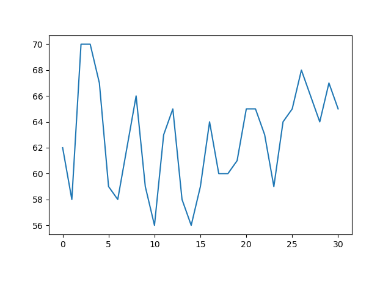
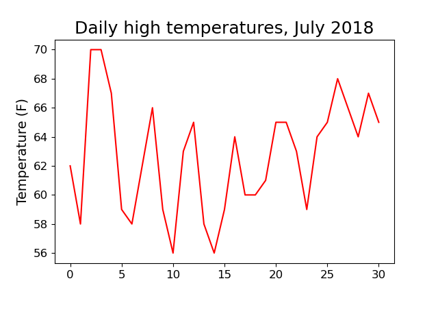
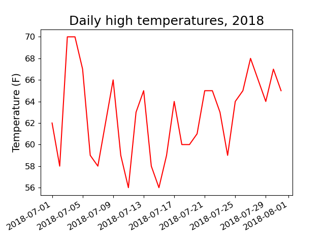
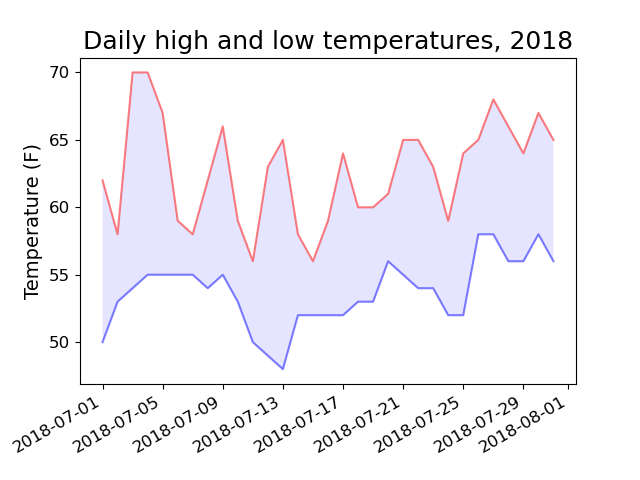
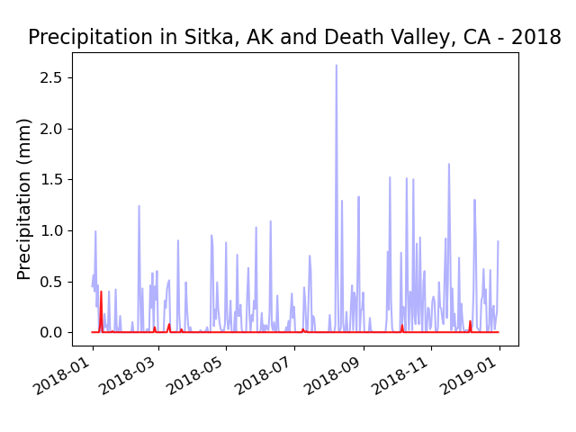
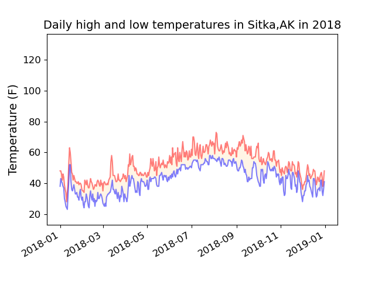
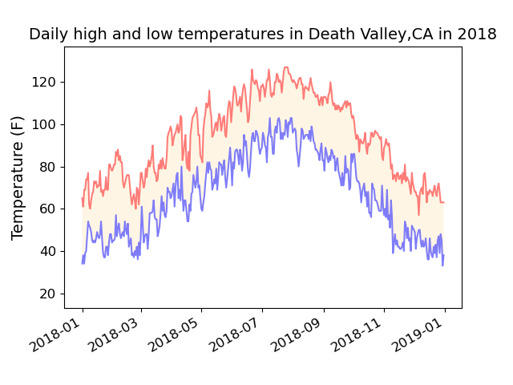
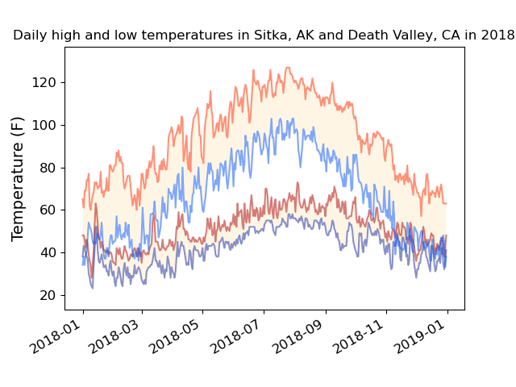
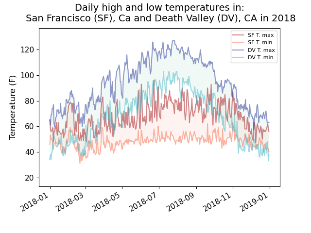
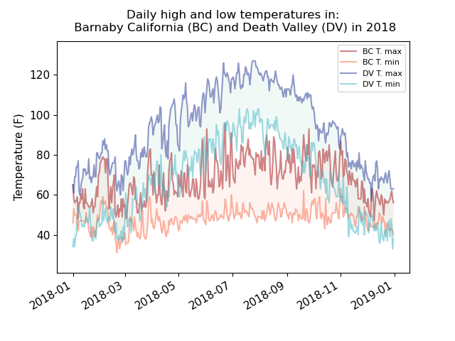

Notes on Python
Table of Contents
1. Preface
The following are notes from selected chapters from Matthes, Python crash course: A hands-on, project-based introduction to programming, with specific sections from Nelli, Python Data Analytics: With Pandas, NumPy, and Matplotlib (Section 9.2) and McKinney, Python for data analysis: data wrangling with pandas, NumPy, and Jupyter (Table 1).
Focus was given to the exercises suggested for each chapter but additional notes have been included to provide context but mainly to illustrate the use of Emacs org-mode for writing documents that include well described code that is reproducible. This, either in the native org file or when exported to PDF or HTML formats.
Description of the use of Org's specific features is provided on a blog post (https://ssl-blog.netlify.app/posts/emacs/emacs-code-example/)
1.1. Requirements
All the code was run using Python 3.12.
1.1.1. Chapter 16
Requires the modules matplotlib and pandas. These can be installed with one of the methods below.
# Using pip
pip install matplotlib pandas
# Using anaconda
conda install conda-forge::matplotlib
conda install anaconda::pandas
2. Variables and simple data types
3. Introducing lists
"A list is a collection of items in a particular order" (Matthes 2019). Lists are written inside square brackets and elements are separated by commas. Elements of the list are accessed using their position (index) indicated between square brackets. The snippet below shows an example. Note that python considers the first item to be in position 0
# English Premier League Season 2024-2025 standings
EPL_24_25_standings = ["Liverpool", "Arsenal","Manchester City",
"Chelsea", "Newcastle United"]
print(EPL_24_25_standings[0])
Liverpool
Negative indices are allowed, for example, [-1] will return the last item in the list. The snippet below shows an example using a negative index and applying a method on this element as it were any other variable.
message = f"{EPL_24_25_standings[-1].upper()} "
message += "finished 5th in season 2024-2025."
print(message)
NEWCASTLE UNITED finished 5th in season 2024-2025.
3.0.1. Exercises
- Exercise 3-1 Names
Store the names of a few of your friends in a list called
names. Print each person’s name by accessing each element in the list, one at a time.names = ['tim', 'tom', 'sam'] print(names[0].title()) print(names[1].title()) print(names[2].title())Tim Tom Sam
- Exercise 3-2 Greetings
Start with the list you used in Exercise 3-1, but instead of just printing each person’s name, print a message to them. The text of each message should be the same, but each message should be personalized with the person’s name.
print(f"Hello {names[0].title()}, welcome back!") print(f"Hello {names[1].title()}, welcome back!") print(f"Hello {names[2].title()}, welcome back!")Hello Tim, welcome back! Hello Tom, welcome back! Hello Sam, welcome back!
- Exercise 3-3 Your Own List
Think of your favorite mode of transportation, such as a motorcycle or a car, and make a list that stores several examples. Use your list to print a series of statements about these items, such as "I would like to own a Honda motorcycle."
transportation_modes = ['bicycle', 'train', 'bus'] print(f"I rarely move by {transportation_modes[0]}") print(f"I used to ride the {transportation_modes[1]} a lot") print(f"Nowadays I mainly use the {transportation_modes[2]}")I rarely move by bicycle I used to ride the train a lot Nowadays I mainly use the bus
3.1. Changing elements
Lists are not static, elements can be changed, removed and included. For the first case, the syntax is similar that used to access the elements.
running_shoes = ["Nike", "Adidas", "Asics", "Hoka"]
print(running_shoes)
running_shoes[0] = "Brooks"
print(running_shoes)
['Nike', 'Adidas', 'Asics', 'Hoka'] ['Brooks', 'Adidas', 'Asics', 'Hoka']
To add elements to the end of list, the method append() is used but to insert an element at any position the method insert() is used.
running_shoes.append("On")
print(running_shoes)
running_shoes.insert(1, "New Balance")
print(running_shoes)
['Brooks', 'Adidas', 'Asics', 'Hoka', 'On'] ['Brooks', 'New Balance', 'Adidas', 'Asics', 'Hoka', 'On']
To remove any element from a list, the del statement or the pop() method can be used indicating the position of the element to be removed. For the latter, if no index is passed, it will remove the last element.
del running_shoes[2]
print(running_shoes)
running_shoes.pop(1)
print(running_shoes)
running_shoes.pop()
print(running_shoes)
['Brooks', 'New Balance', 'Asics', 'Hoka', 'On'] ['Brooks', 'Asics', 'Hoka', 'On'] ['Brooks', 'Asics', 'Hoka']
If the position of the item to remove is not known, its value can be used instead along with the method remove(). Note that it will only remove the first occurrence of the value.
print(running_shoes)
running_shoes.remove("Asics")
print(running_shoes)
['Brooks', 'Asics', 'Hoka'] ['Brooks', 'Hoka']
3.1.1. Exercises
- Exercise 3-4 Guest list
If you could invite anyone, living or deceased, to dinner, who would you invite? Make a list that includes at least three people you’d like to invite to dinner. Then use your list to print a message to each person, inviting them to dinner.
guests = ['linus', 'tim', 'tom'] msg_end = "I would like to invite you to have dinner" print(f"Dear {guests[0].title()}, {msg_end}") print(f"Dear {guests[1].title()}, {msg_end}") print(f"Dear {guests[2].title()}, {msg_end}")Dear Linus, I would like to invite you to have dinner Dear Tim, I would like to invite you to have dinner Dear Tom, I would like to invite you to have dinner
- Exercise 3-5 Changing Guest List
You just heard that one of your guests can’t make the dinner, so you need to send out a new set of invitations. You’ll have to think of someone else to invite.
- Start with your program from Exercise 3-4. Add a print() call at the end of your program stating the name of the guest who can’t make it.
- Modify your list, replacing the name of the guest who can’t make it with the name of the new person you are inviting.
- Print a second set of invitation messages, one for each person who is still in your list.
for guest in guests: print(f"Dear {guest.title()}, {msg_end}") print(f"\nUnfortunatelly, {guests[0].title()} won't come for dinner\n") guests.remove('linus') guests.append('steve') print(f"Dear {guests[len(guests)-1].title()}, {msg_end}")Dear Linus, I would like to invite you to have dinner Dear Tim, I would like to invite you to have dinner Dear Tom, I would like to invite you to have dinner Unfortunatelly, Linus won't come for dinner Dear Steve, I would like to invite you to have dinner
- Exercise 3-6 More Guests
You just found a bigger dinner table, so now more space is available. Think of three more guests to invite to dinner.
- Start with your program from Exercise 3-4 or Exercise 3-5. Add a
print()call to the end of your program informing people that you found a bigger dinner table. - Use
insert()to add one new guest to the beginning of your list. - Use
insert()to add one new guest to the middle of your list. - Use
append()to add one new guest to the end of your list. - Print a new set of invitation messages, one for each person in your list.
for guest in guests: print(f"- Dear {guest.title()}, {msg_end}") print(f"\nWe found a bigger place to host the dinner\n") # Append new guests to the list guests.insert(0, "tina") guests.insert(2, "anna") guests.insert(len(guests), "maya") for guest in guests: print(f"- Dear {guest.title()}, {msg_end}")- Dear Tim, I would like to invite you to have dinner - Dear Tom, I would like to invite you to have dinner - Dear Steve, I would like to invite you to have dinner We found a bigger place to host the dinner - Dear Tina, I would like to invite you to have dinner - Dear Tim, I would like to invite you to have dinner - Dear Anna, I would like to invite you to have dinner - Dear Tom, I would like to invite you to have dinner - Dear Steve, I would like to invite you to have dinner - Dear Maya, I would like to invite you to have dinner
- Start with your program from Exercise 3-4 or Exercise 3-5. Add a
- Exercise 3-7 Shrinking Guest List
You just found out that your new dinner table won’t arrive in time for the dinner, and you have space for only two guests.
Start with your program from Exercise 3-6. Add a new line that prints a message saying that you can invite only two people for dinner.
print("Change of plans, now only two people can come to dinner\n")Change of plans, now only two people can come to dinner
Use
pop()to remove guests from your list one at a time until only two names remain in your list. Each time you pop a name from your list, print a message to that person letting them know you’re sorry you can’t invite them to dinner.while len(guests) > 2: out_guest = guests.pop() print(f"- Sorry, {out_guest.title()} we can't have you for dinner.")- Sorry, Maya we can't have you for dinner. - Sorry, Steve we can't have you for dinner. - Sorry, Tom we can't have you for dinner. - Sorry, Anna we can't have you for dinner.
Print a message to each of the two people still on your list, letting them know they’re still invited.
for guest in guests: print(f"- Dear {guest.title()}, please come to dinner")- Dear Tina, please come to dinner - Dear Tim, please come to dinner
- Use del to remove the last two names from your list, so you have an empty list. Print your list to make sure you actually have an empty list at the end of your program.
while guests: del guests[0] print(guests)[]
3.2. Organizing a list
The order of the items in a list can be changed in place or by producing a new object. The former is achieved using the sort() method while the latter is done with the sorted() function.
running_shoes = ['Brooks', 'New Balance', 'Adidas', 'Asics', 'Hoka', 'On']
running_shoes_bk = running_shoes.copy()
print("Temporarily sort")
print(sorted(running_shoes)) # Temporarily sort
print("\nPrint 'running_shoes'")
print(running_shoes)
running_shoes.sort() # Permanently sort
print("\nPrint 'running_shoes' after sort()")
print(running_shoes)
Temporarily sort ['Adidas', 'Asics', 'Brooks', 'Hoka', 'New Balance', 'On'] Print 'running_shoes' ['Brooks', 'New Balance', 'Adidas', 'Asics', 'Hoka', 'On'] Print 'running_shoes' after sort() ['Adidas', 'Asics', 'Brooks', 'Hoka', 'New Balance', 'On']
Another method to change a list is reverse() which will reverse the order of its elements permanently (in place).
print(f"Print sorted list:\n{running_shoes}\n")
running_shoes.reverse()
print(f"Print reversed list:\n{running_shoes}")
Print sorted list: ['Adidas', 'Asics', 'Brooks', 'Hoka', 'New Balance', 'On'] Print reversed list: ['On', 'New Balance', 'Hoka', 'Brooks', 'Asics', 'Adidas']
Lastly, the number of items in a list can be retrieved with the len() function.
print(len(running_shoes))
6
3.2.1. Exercises
- Exercise 3-8 Seeing the World
Think of at least five places in the world you’d like to visit.
- Store the locations in a list. Make sure the list is not in alphabetical order. Then, print your list in its original order. Don’t worry about printing the list neatly, just print it as a raw Python list (→).
- Use
sorted()to print your list in alphabetical order without modifying the actual list (→). - Show that your list is still in its original order by printing it (→).
- Use
sorted()to print your list in reverse alphabetical order without changing the order of the original list (→). - Show that your list is still in its original order by printing it again (→).
- Use
reverse()to change the order of your list. Print the list to show that its order has changed (→). - Use
reverse()to change the order of your list again. Print the list to show it’s back to its original order (→). - Use
sort()to change your list so it’s stored in alphabetical order. Print the list to show that its order has been changed (→). - Use
sort()to change your list so it’s stored in reverse alphabetical order. Print the list to show that its order has changed (→).
itravel = ['thailand', 'colombia', 'chile', 'tanzania', 'madagascar'] print("Unsorted list") for place in itravel: print(f"- {place.title()}")Unsorted list - Thailand - Colombia - Chile - Tanzania - Madagascar
print("Sorted list") for place in sorted(itravel): print(f"- {place.title()}")Sorted list - Chile - Colombia - Madagascar - Tanzania - Thailand
print("Check that list is in the same order") for place in itravel: print(f"- {place.title()}")Check that list is in the same order - Thailand - Colombia - Chile - Tanzania - Madagascar
print("Sorted list in reverse order") for place in sorted(itravel, reverse=True): print(f"- {place.title()}")Sorted list in reverse order - Thailand - Tanzania - Madagascar - Colombia - Chile
Re-evaluate the code from part 3.
print("Check that list is in the same order") for place in itravel: print(f"- {place.title()}")Check that list is in the same order - Thailand - Colombia - Chile - Tanzania - Madagascar
# Reverse list print("Reverse list") itravel.reverse() for place in itravel: print(f"- {place.title()}")Reverse list - Madagascar - Tanzania - Chile - Colombia - Thailand
# Re-reverse list print("Reverse list (again)") itravel.reverse() for place in itravel: print(f"- {place.title()}")Reverse list (again) - Thailand - Colombia - Chile - Tanzania - Madagascar
# Sort list print("Sort the list") itravel.sort() for place in itravel: print(f"- {place.title()}")Sort the list - Chile - Colombia - Madagascar - Tanzania - Thailand
# Sort in reverse order print("Sort in reverse order") itravel.sort(reverse=True) for place in itravel: print(f"- {place.title()}")Sort in reverse order - Thailand - Tanzania - Madagascar - Colombia - Chile
- Exercise 3-9 Dinner Guests
Working with one of the programs from Exercises 3-4 through 3-7, use
len()to print a message indicating the number of people you are inviting to dinner.# guests = ['linus', 'tim', 'tom'] print(f"There will be {len(guests)} people at the dinner")There will be 0 people at the dinner
- Exercise 3-10 Every Function
Think of something you could store in a list. For example, you could make a list of mountains, rivers, countries, cities, languages, or any- thing else you’d like. Write a program that creates a list containing these items and then uses each function introduced in this chapter at least once.
languages = ['spanish', 'chinese', 'english', 'korean', 'swahili'] # length of a list print(f"The list has {len(languages)} elements") # index an element print(f"The first item is: {languages[0].title()}") # replace an element using an index languages[0] = 'quechua' print(f"\nNow the first element is: {languages[0].title()}") # append an element languages.append('aymara') # insert an element at a specific position languages.insert(3, 'guarani') print(f"\nNow the fourth element is: {languages[3].title()}") print(f"And the last is: {languages[-1].title()}") # Removing elements print(f"\n{languages}") print("I will now remove the 4th, the 1st and last elements") del languages[3] languages.pop() languages.pop(0) print(languages) # sort the elements print(sorted(languages)) languages.sort(reverse=True) print(languages)The list has 5 elements The first item is: Spanish Now the first element is: Quechua Now the fourth element is: Guarani And the last is: Aymara ['quechua', 'chinese', 'english', 'guarani', 'korean', 'swahili', 'aymara'] I will now remove the 4th, the 1st and last elements ['chinese', 'english', 'korean', 'swahili'] ['chinese', 'english', 'korean', 'swahili'] ['swahili', 'korean', 'english', 'chinese']
3.3. Avoiding errors
Note that Python counts items starting at 1 but index them from 0 and above. This may cause an error (IndexError) when trying to retrieve the last item of a list. A way to avoid this, is to use the negative index [-1]. This will only fail if applied to an empty list.
3.3.1. Exercises
- 3-11. Intentional Error
If you haven’t received an index error in one of your programs yet, try to make one happen. Change an index in one of your programs to produce an index error. Make sure you correct the error before closing the program.
The snippet below tries to retrieve the last item of a list using the value of the list length which will cause an error. To print it by evaluating the code a
tryblock is used. Below the results the message that appears in an interactive session is presented.len_brands = len(running_shoes) print(f"We have listed {len_brands} running shoe brands") try: print(f"Brand {len_brands} is {running_shoes[len_brands]}") except Exception as e: print(e)We have listed 6 running shoe brands list index out of range
Traceback (most recent call last): File "<stdin>", line 1, in <module> IndexError: list index out of range
4. Working with lists
4.1. Looping over a list
The snippet below illustrates a simple for loop that will print the items in the list magicians. An local variable is created to store each item from the list. It could have any name but it is recommended to be something informative, in this case, distinguishing the singular nature of the value it will hold, magician.
magicians = ['alice', 'david', 'carolina']
for magician in magicians:
print(magician)
alice david carolina
The assigned variable will keep its value until all the commands in the for loop are finished then it will take the value of the next item. The snippet below will use that to print a couple of messages for each magician and after all the items are processed, print a final message. Within the code latter is distinguished from the previous by not being indented which signals that is not part of the for loop. Generally, is the way Python determines how code is structured.
for magician in magicians:
print(f"{magician.title()}, that was a great trick!")
print(f"I can't wait to see your next trick, {magician.title()}.\n")
print("Thank you, everyone. That was a great magic show!")
Alice, that was a great trick! I can't wait to see your next trick, Alice. David, that was a great trick! I can't wait to see your next trick, David. Carolina, that was a great trick! I can't wait to see your next trick, Carolina. Thank you, everyone. That was a great magic show!
Failing to add an indentation or adding unnecessary indentation can cause errors (IndentationError). This will raise an exception however, it is also possible to cause a logical error that is, one that would not raise an exception but would not produce the expected result as in the snippet below where line 5 was indented and thus, interpreted as part of the loop resulting in the 'last' message to be printed 4 times
1: for magician in magicians:
2: print(f"{magician.title()}, that was a great trick!")
3: print(f"I can't wait to see your next trick, {magician.title()}.\n")
4:
5: print("Thank you, everyone. That was a great magic show!")
Alice, that was a great trick! I can't wait to see your next trick, Alice. Thank you, everyone. That was a great magic show! David, that was a great trick! I can't wait to see your next trick, David. Thank you, everyone. That was a great magic show! Carolina, that was a great trick! I can't wait to see your next trick, Carolina. Thank you, everyone. That was a great magic show!
4.1.1. Exercises
- Exercise 4-1 Pizzas
Think of at least three kinds of your favorite pizza. Store these pizza names in a list, and then use a for loop to print the name of each pizza.
pizzas = ['pepperoni', 'cheese', 'ny'] for pizza in pizzas: print(f"- {pizza}")- pepperoni - cheese - ny
Modify your for loop to print a sentence using the name of the pizza instead of printing just the name of the pizza. For each pizza you should have one line of output containing a simple statement like "I like pepperoni pizza".
for pizza in pizzas: print(f"I like {pizza} pizza")I like pepperoni pizza I like cheese pizza I like ny pizza
Add a line at the end of your program, outside the for loop, that states how much you like pizza. The output should consist of three or more lines about the kinds of pizza you like and then an additional sentence, such as "I really love pizza!".
for pizza in pizzas: print(f"I like {pizza} pizza") print('...\nI really like pizza')I like pepperoni pizza I like cheese pizza I like ny pizza ... I really like pizza
- Exercise 4-2 Animals
Think of at least three different animals that have a common characteristic. Store the names of these animals in a list, and then use a for loop to print out the name of each animal.
animals = ['llama', 'armadillo', 'puma'] for animal in animals: print(f"- {animal.title()}")- Llama - Armadillo - Puma
Modify your program to print a statement about each animal, such as "A dog would make a great pet".
for animal in animals: ianimal = f"{animal.title()}" if ianimal[0] == 'A': print(f"An {ianimal} has four legs") else: print(f"A {ianimal} has four legs")A Llama has four legs An Armadillo has four legs A Puma has four legs
- Add a line at the end of your program stating what these animals have in common. You could print a sentence such as "Any of these animals would make a great pet!"
for animal in animals: ianimal = f"{animal.title()}" if ianimal[0] == 'A': print(f"An {ianimal} has four legs") else: print(f"A {ianimal} has four legs") print('\nAll the above animals are found in Bolivia')A Llama has four legs An Armadillo has four legs A Puma has four legs All the above animals are found in Bolivia
4.2. Making numerical lists
At the beginning of this section, the range() function is introduced as a way to create lists. However, it should be noted that the type of object that this function creates is not a list. To transform it into a list it should be passed to the list() function (see the snippet below).
irange = range(1, 5)
print(f"irange is an object of type: {type(irange)}\nThus, when printed returns:")
print(irange)
# Transform it into a list object
ilist = list(irange)
print(f"\nilist is an object of type: {type(ilist)}\nThus, when printed returns:")
print(ilist)
irange is an object of type: <class 'range'> Thus, when printed returns: range(1, 5) ilist is an object of type: <class 'list'> Thus, when printed returns: [1, 2, 3, 4]
The range function is useful for creating different series of numbers. For example, the snippet below uses it to create a range of even numbers from 2 to 14 (the last value is not included). This range is used in a for loop to calculate the square value and append it to an empty list. Lastly, the list is printed.
squares = []
for even in range(2, 16, 2):
squares.append(even**2)
print(squares)
[4, 16, 36, 64, 100, 144, 196]
The snippet above can be further simplified using list comprehensions.
squares = [even**2 for even in range(2, 16, 2)]
print(squares)
[4, 16, 36, 64, 100, 144, 196]
4.2.1. Exercises
- Exercise 4-3 Counting to Twenty
Use a for loop to print the numbers from 1 to 20, inclusive.
for i in range(1, 21): print(i)1 2 3 4 5 6 7 8 9 10 11 12 13 14 15 16 17 18 19 20
- Exercise 4-4 One Million
Make a list of the numbers from one to one million, and then use a for loop to print the numbers. (If the output is taking too long, stop it by pressing
Ctrl-Cor by closing the output window.)million = list(range(1, 1_000_001)) for i in sorted(million, reverse=True): print(i)The code block will not be evaluated (
:eval no) nor it will be tangled (:tangle no) since executing the code will take too time and once finished will take too much space in the output. - Exercise 4-5 Summing a Million
Make a list of the numbers from one to one million, and then use min() and max() to make sure your list actually starts at one and ends at one million. Also, use the sum() function to see how quickly Python can add a million numbers.
million = list(range(1, 1_000_001)) print("There is a list of integers from 1 to 1000000") print(f"The min value is: {min(million)}") print(f"The max value is: {max(million)}") print(f"The sum of all values is: {sum(million)}")There is a list of integers from 1 to 1000000 The min value is: 1 The max value is: 1000000 The sum of all values is: 500000500000
- Exercise 4-6 Odd Numbers
Use the third argument of the
range()function to make a list of the odd numbers from 1 to 20. Use a for loop to print each number.odd_n = range(1, 20, 2) for odd in odd_n: print(odd)1 3 5 7 9 11 13 15 17 19
- Exercise 4-7 Threes
Make a list of the multiples of 3 from 3 to 30. Use a for loop to print the numbers in your list.
imult = list(range(3, 33, 3)) for i in imult: print(i)3 6 9 12 15 18 21 24 27 30
- Exercise 4-8 Cubes
A number raised to the third power is called a cube. For example, the cube of 2 is written as
2**3in Python. Make a list of the first 10 cubes (that is, the cube of each integer from 1 through 10), and use a for loop to print out the value of each cube.cubes = [] for i in range(1, 11): cube = i**3 cubes.append(cube) print(cube)1 8 27 64 125 216 343 512 729 1000
- Exercise 4-9 Cube Comprehension
Use a list comprehension to generate a list of the first 10 cubes.
cubes_2 = [i**3 for i in range(1, 11)]
4.3. Working with subsets of a list
Subsets of a list can be produced by using a range in the index ([X:Y]) where X represent the first item to select and Y represents the last item (not included). The snippet below shows two examples, one where both beginning and end are specified and the second one where the beginning is omitted and interpreted as 0. Similarly, if the end is omitted it would be interpreted as the last item and if both are omitted it will print the whole list. Negative indices can be used.
tennis_players = ["Rafa", "Roger", "Novak", "Andy", "Stan", "Jannik"]
print(tennis_players[1:4])
print(tennis_players[:3])
# Print the last 3 elements of the list
print(tennis_players[-3:])
# Print everything except the last 3 elements
print(tennis_players[:-3])
['Roger', 'Novak', 'Andy'] ['Rafa', 'Roger', 'Novak'] ['Andy', 'Stan', 'Jannik'] ['Rafa', 'Roger', 'Novak']
Interestingly, if an empty range is provided and stored in an object, it would point to a copy of the list rather than the original one. See the example below.
print(f"The variable 'tennis_players' contains:\n {tennis_players}\n")
# Create a copy and a reference to the original
t_players_1 = tennis_players[:]
t_players_2 = tennis_players
# Modify both and compare to the original
t_players_1.append("Carlos")
t_players_2.pop()
print(f"The variable 't_players_1' contains:\n {t_players_1}\n")
print(f"The variable 't_players_2' contains:\n {t_players_2}\n")
print(f"The variable 'tennis_players' now contains:\n {tennis_players}\n")
The variable 'tennis_players' contains: ['Rafa', 'Roger', 'Novak', 'Andy', 'Stan', 'Jannik'] The variable 't_players_1' contains: ['Rafa', 'Roger', 'Novak', 'Andy', 'Stan', 'Jannik', 'Carlos'] The variable 't_players_2' contains: ['Rafa', 'Roger', 'Novak', 'Andy', 'Stan'] The variable 'tennis_players' now contains: ['Rafa', 'Roger', 'Novak', 'Andy', 'Stan']
Looping through a list subset is also possible.
for player in t_players_1[1:4]:
print(player.upper())
ROGER NOVAK ANDY
4.3.1. Exercises
- Exercise 4-10 Slices
Using one of the programs you wrote in this chapter, add several lines to the end of the program that do the following:
- Print the message "The first three items in the list are:". Then use a slice to print the first three items from that program’s list.
- Print the message "Three items from the middle of the list are:". Use a slice to print three items from the middle of the list.
- Print the message "The last three items in the list are:". Use a slice to print the last three items in the list.
print("This exercise uses the object 't_players_1'") t_players_1 = ['Rafa', 'Roger', 'Novak', 'Andy', 'Stan', 'Jannik', 'Carlos'] print(t_players_1) print("\nThe first 3 items of the list are:") for i in t_players_1[:3]: print(i) def sublist_even(ilist, n_subitems): n_items = len(ilist) # list even, sublist even if n_items % 2 == 0 and n_subitems % 2 == 0: mid_point = n_items / 2 i_start = (mid_point + 1) - (n_subitems/2) # list odd, sublist even elif n_items%2 != 0 and n_subitems%2 == 0: mid_point = (n_items+1) / 2 i_start = mid_point - (n_subitems/2) # list even, sublist odd elif n_items%2 == 0 and n_subitems%2 != 0: mid_point = (n_items) / 2 i_start = mid_point - ((n_subitems-1)/2) # list odd, sublist odd elif n_items%2 != 0 and n_subitems%2 != 0: mid_point = (n_items + 1) / 2 i_start = mid_point - ((n_subitems-1)/2) i_start = int(i_start - 1) i_end = i_start + n_subitems isublist = ilist[i_start:i_end] return isublist print("\nThe 3 items in the middle are:") isublist = sublist_even(t_players_1, 3) for i in isublist: print(i) print("\nThe last 3 items are:") for i in t_players_1[-3:]: print(i)This exercise uses the object 't_players_1' ['Rafa', 'Roger', 'Novak', 'Andy', 'Stan', 'Jannik', 'Carlos'] The first 3 items of the list are: Rafa Roger Novak The 3 items in the middle are: Novak Andy Stan The last 3 items are: Stan Jannik Carlos
- Exercise 4-11 My Pizzas, Your Pizzas
Start with your program from Exercise 4-1. Make a copy of the list of pizzas, and call it
friend_pizzas. Then, do the following:- Add a new pizza to the original list (line 3).
- Add a different pizza to the list friend_pizzas (line 4).
- Prove that you have two separate lists. Print the message "My favorite pizzas are:", and then use a for loop to print the first list (line 6). Print the message "My friend’s favorite pizzas are:", and then use a for loop to print the second list (line 10). Make sure each new pizza is stored in the appropriate list.
1: # pizzas = ['pepperoni', 'cheese', 'ny'] 2: friend_pizzas = pizzas[:] 3: pizzas.append('vegetarian') 4: friend_pizzas.insert(len(friend_pizzas), 'stone') 5: 6: print("My favorite pizzas are:") 7: for pizza in pizzas: 8: print(f"- {pizza}") 9: 10: print("My friend’s favorite pizzas are:") 11: for pizza in friend_pizzas: 12: print(f"- {pizza}")My favorite pizzas are: - pepperoni - cheese - ny - vegetarian My friend’s favorite pizzas are: - pepperoni - cheese - ny - stone
- Exercise 4-12 More Loops
All versions of
foods.pyin this section have avoided using for loops when printing to save space. Choose a version offoods.py, and write two for loops to print each list of foods.my_foods = ['pizza', 'falafel', 'carrot cake'] friend_foods = my_foods[:] print("My favorite foods are:") for food in my_foods: print(f"- {food}") print("\nMy friend's favorite foods are:") for food in friend_foods: print(f"- {food}")My favorite foods are: - pizza - falafel - carrot cake My friend's favorite foods are: - pizza - falafel - carrot cake
4.4. Tupples
Tupples are objects that once defined can not be changed (immutable). That means that if a new value is attempted to be assigned to an existing item or added it will raise an error (TypeError). The same error would be raised if an item is attempted to be removed however, it is possible to overwrite the variable with a new tupple. The exampe below shows this; note that the tupple dimensions is defined using parenthesis instead of square brackets.
dimensions = (200, 50)
print("Original dimensions:")
for dimension in dimensions:
print(dimension)
dimensions = (400, 100)
print("\nModified dimensions:")
for dimension in dimensions:
print(dimension)
Original dimensions: 200 50 Modified dimensions: 400 100
4.4.1. Exercises
- Exercise 4-13 Buffet
A buffet-style restaurant offers only five basic foods. Think of five simple foods, and store them in a tuple.
- Use a for loop to print each food the restaurant offers.
- Try to modify one of the items, and make sure that Python rejects the change.
- The restaurant changes its menu, replacing two of the items with different foods. Add a line that rewrites the tuple, and then use a for loop to print each of the items on the revised menu.
foods = ('quinoa', 'chicken soup', 'pork', 'fish', 'beaf') for food in foods: print(food) # This will generate an error try: print(f"\nfoods[0] = 'beans'") foods[0] = 'beans' except Exception as e: print(e) # Change tuple print("\nChanging the food items...") foods = ('beans', 'pizza', 'pork', 'fish', 'beaf') for food in foods: print(food)quinoa chicken soup pork fish beaf foods[0] = 'beans' 'tuple' object does not support item assignment Changing the food items... beans pizza pork fish beaf
4.5. Formatting code in Emacs
When introducing for loops the importance of indentation for delimiting the commands inside and outside the loop. This and other conventions are described in what is called a Python Enhancement Proposal (PEP), more specifically in PEP8. In it, an indentation level is defined as four spaces. Editors capable of writing Python code are configured to replace tabs with 4 spaces. Similarly, PEP8 recommends to limit each line no more than 79 characters and comments to no more than 72. As for blank lines, these should be used to improve code legibility. For example, it is recommended to leave two blank lines after a class or function definition.
In Emacs replacing tabs with 4 spaces is configured by the built-in python.el whereas code completion, correction is provided by additional packages (including external ones). As for the Emacs packages one worth mentioning is Elpy which aims to provide IDE capabilities. For this, some external packages are required most notably:
jedi: An autocompletion and static analysis library for Python, used in IDEs and editors for code insights.flake8: A linting tool that checks Python code for style errors, PEP 8 compliance, and common bugs.autopep8: A tool to automatically format Python code to comply with the PEP 8 style guide.black: A Python code formatter that enforces a consistent coding style by reformatting code to its opinionated standard.yapf: A Python code formatter that reformats code to align with the PEP 8 style guide or user-defined styles.Elpy can interact with another package for checking the code and warns for errors,
Flycheck. This package will, in turn, will connect with external syntax checkers such asflake8orpylint. Finally, the formatting process can be automated using the packageformat-all.Check the home page for installation and configuration instructions.
5. If statements
5.1. Conditional tests
The snippet ). Note that the latter is indented relative to the conditional test. Thus, any code that is below and indented will be executed if the condition is True otherwise it will be ignored.
1: if <conditional_test>:
2: <do something>
One common way to state a conditional test is through the use of binary operators, some are described in table 1 (Modified from McKinney 2022).
| Operator | Description |
|---|---|
a == b |
True if a equals b |
a != b |
True if a is not equal to b |
a < b, a <= b |
True if a is less than (less than or equal to) b |
a > b, a >= b |
True if a is greater than (greater than or equal to) b |
a is b |
True if a and b reference the same Python object |
a is not b |
True if a and b reference different Python objects |
The first two (== and !=) can be used to compare strings or numbers. The next two (e.g. <, >=) are used with numerical comparisons. Finally, the last two operators (is and is not) are more suitable for objects.
# Test equality
print(f"Test Equality:\n{'Brooks' == 'brooks'}") # Case sensitive > False
print(35 == 35.0) # Int is converted to float before testing > True
# Test inequality
print(f"Test Inequality:\n{'Brooks' != 'brooks'}")
print(35 != 35.0)
# Compare numbers
print(f"Compare numbers:\n{35 < 35.001}")
# Test if the objects the variables point to are the same
running_shoes = ['Brooks', 'New Balance', 'Adidas', 'Asics', 'Hoka', 'On']
running_shoes_bk = running_shoes.copy()
print(f"Compare 2 objects:\n{running_shoes is running_shoes_bk}")
Test Equality: False True Test Inequality: True False Compare numbers: True Compare 2 objects: False
Test Equality: False True Test Inequality: True False Compare numbers: True Compare 2 objects: False
Two or more conditions can be tested using the logical operators and and or. The former will evaluate to True if all the conditions are True whereas the latter will evaluate to True if at least one is True.
adult_age_SKorea = 19
adult_age_US = 18
adult_age_NewZeland = 20
print(f'''Is the Adult age in South Korea higher than in US and NZ:
{(adult_age_SKorea > adult_age_US) and\
(adult_age_SKorea > adult_age_NewZeland)}
''')
print(f'''Is the Adult age in South Korea higher than either US or NZ:
{(adult_age_SKorea > adult_age_US) or\
(adult_age_SKorea > adult_age_NewZeland)}
''')
Is the Adult age in South Korea higher than in US and NZ: False Is the Adult age in South Korea higher than either US or NZ: True
Is the Adult age in South Korea higher than in US and NZ: False Is the Adult age in South Korea higher than either US or NZ: True
Besides binary operators, the keyword in (and its opposite not in) can be used as a conditional statement to test if an element is part of a list.
base_toppings = ['mushrooms', 'onions', 'pineapple']
my_topping = 'mushrooms'
print(f'''Are {my_topping} included in the basic toppings?
{my_topping in base_toppings}''')
my_topping = 'olives'
print(f'''Are {my_topping} not included in the basic toppings?
{my_topping not in base_toppings}''')
Are mushrooms included in the basic toppings? True Are olives not included in the basic toppings? True
5.1.1. Exercises
- Exercise 5-1 Conditional Tests
Write a series of conditional tests. Print a statement describing each test and your prediction for the results of each test.
- Look closely at your results, and make sure you understand why each line evaluates to True or False.
Create at least ten tests. Have at least five tests evaluate to True and another five tests evaluate to False.
For this exercise, a special type of print statement will be used so that the expression and its evaluation will be printed. The statement has the following form
print(f"{<expr> = }").
print("My home town is La Paz: home_town = 'la paz'") home_town = 'la paz' print(f"{home_town.title() == 'La Paz' = }") print(f"{home_town.title() == 'La paz' = }") print("\nAverage income in Japan in yen: jp_av_income = 6200000 ") jp_av_income = 6200000 print(f"{jp_av_income == 6_200_000 = }") print(f"{jp_av_income == 6200000 = }") print(f"\nComparing numbers:") print(f"{5 == 5.0 = }") print(f"{5 is 5.0 = }")/tmp/babel-09JRQ5/python-xSWMXE:14: SyntaxWarning: "is" with 'int' literal. Did you mean "=="? print(f"{5 is 5.0 = }") My home town is La Paz: home_town = 'la paz' home_town.title() == 'La Paz' = True home_town.title() == 'La paz' = False Average income in Japan in yen: jp_av_income = 6200000 jp_av_income == 6_200_000 = True jp_av_income == 6200000 = True Comparing numbers: 5 == 5.0 = True 5 is 5.0 = False - Exercise 5-2 More Conditional Tests
You don’t have to limit the number of tests you create to ten. If you want to try more comparisons, write more tests and add them to
conditional_tests.py. Have at least one True and one False result for each of the following:- Tests for equality and inequality with strings
- Tests using the lower() method
- Numerical tests involving equality and inequality, greater than and less than, greater than or equal to, and less than or equal to
- Tests using the and keyword and the or keyword
- Test whether an item is in a list
- Test whether an item is not in a list
# Tests for equality and inequality with strings print("Define two strings str1 = 'la paz' and str2 = 'La Paz'") str1 = 'la paz' str2 = 'La Paz' print(f"{str1 == str2 = }") # Tests using the lower() method print(f"{str1 == str2.lower() = }") # Numerical tests involving equality and inequality, # greater than and less than, greater than or equal to, # and less than or equal to print("\nDefine two numbers inum1 = 25 and inum2 = 40") inum1 = 25 inum2 = 40 print(f"{inum1 == inum2 = }") print(f"inum1 != inum2 = {inum1 != inum2}") print(f"{inum1+25 < inum2 = }") print(f"{inum1 >= inum2-25 = }") # Tests using the and keyword and the or keyword print(f"{25 < 35 and 34 > 23 = }") print(f"{inum1 == inum2 or inum2 > inum1 = }") # Test whether an item is in a list my_foods = ['pizza', 'fried chicken', 'tuna', 'chicken soup'] my_food = 'chicken' print(f"\nFood I have: my_foods = {my_foods}") print(f"Food I search: my_food = {my_food}") print(f"{my_food in my_foods = }") # Test whether an item is not in a list print(f"{my_food not in my_foods = }")Define two strings str1 = 'la paz' and str2 = 'La Paz' str1 == str2 = False str1 == str2.lower() = True Define two numbers inum1 = 25 and inum2 = 40 inum1 == inum2 = False inum1 != inum2 = True inum1+25 < inum2 = False inum1 >= inum2-25 = True 25 < 35 and 34 > 23 = True inum1 == inum2 or inum2 > inum1 = True Food I have: my_foods = ['pizza', 'fried chicken', 'tuna', 'chicken soup'] Food I search: my_food = chicken my_food in my_foods = False my_food not in my_foods = True
5.2. If statements
The snippet example-if-else). Again, note that the commands to be executed in each case are indented relative to the conditional test and the else: keyword.
1: cars = ['audi', 'bmw', 'subaru', 'toyota']
2:
3: for car in cars:
4: if car == 'bmw':
5: print(car.upper())
6: else:
7: print(car.title())
Audi BMW Subaru Toyota
The above example tested for two possible scenarios yet, more can added using the elif keyword. The example elif-example tests if the value of age variable falls into one of three different categories, [0-4), [4-18) and [18-] in order to determine the price of a ticket.
age = 12
if age < 4:
price = 0
elif age < 18:
price = 25
else:
price = 40
print(f"Your admission cost is ${price}.")
Your admission cost is $25.
Note that the block defined after the else keyword will match any condition that was not met by the conditional statements above. If such behavior is not desired one can add additional elif blocks for specific conditions and omit the else keyword.
5.2.1. Exercises
- Exercise 5-3 Alien Colors #1
Imagine an alien was just shot down in a game. Create a variable called alien_color and assign it a value of 'green', 'yellow', or 'red'.
- Write an if statement to test whether the alien’s color is green. If it is, print a message that the player just earned 5 points (line 1).
- Write one version of this program that passes the if test and another that fails. (The version that fails will have no output, line 7)
1: print("This is the first version of the test:") 2: alien_color = 'green' 3: 4: if alien_color == 'green': 5: print('You have earned 5pts') 6: 7: print("This is the second version of the test:") 8: alien_color = 'blue' 9: 10: if alien_color == 'green': 11: print('You have earned 5pts')This is the first version of the test: You have earned 5pts This is the second version of the test:
- Exercise 5-4 Alien Colors #2
Choose a color for an alien as you did in Exercise 5-3, and write an if- else chain.
- If the alien’s color is green, print a statement that the player just earned 5 points for shooting the alien.
- If the alien’s color isn’t green, print a statement that the player just earned 10 points.
- Write one version of this program that runs the if block and another that runs the else block.
For this exercise Org's header argument,
:varis used to define the color of the alien, by defaultgreen. Then, for the second version of the code, the a code block is written using the header argument:noweb yesso, that the code from the first block can be inserted. Additionally, the color variable is set toblueso that theelse:block is run. Finally, to avoid, printing the code again, the header argument:exports resultsis used.print(f"The value of icolor is: {icolor}") if alien_color == icolor: print('You have earned 5pts') else: print("You have earned 10pts")The value of icolor is: green You have earned 10pts
The value of icolor is: blue You have earned 5pts
- Exercise 5-5 Alien Colors #3
Turn your if- else chain from Exercise 5-4 into an if- elif- else chain.
- If the alien is green, print a message that the player earned 5 points.
- If the alien is yellow, print a message that the player earned 10 points.
- If the alien is red, print a message that the player earned 15 points.
- Write three versions of this program, making sure each message is printed for the appropriate color alien.
print(f"The value of icolor is: {icolor}") if alien_color == 'green': print('You have earned 5pts') elif alien_color == 'red': print("You have earned 15pts") elif alien_color == 'yellow': print("You have earned 10pts")The value of icolor is: green
The value of icolor is: red You have earned 10pts
The value of icolor is: yellow You have earned 10pts
- Exercise 5-6 Stages of Life
Write an if- elif- else chain that determines a person’s stage of life. Set a value for the variable age, and then:
- If the person is less than 2 years old, print a message that the person is a baby.
- If the person is at least 2 years old but less than 4, print a message that the person is a toddler.
- If the person is at least 4 years old but less than 13, print a message that the person is a kid.
- If the person is at least 13 years old but less than 20, print a message that the person is a teenager.
- If the person is at least 20 years old but less than 65, print a message that the person is an adult.
- If the person is age 65 or older, print a message that the person is an elder.
print(f"Your age is {age}.") imessage = "You are classified as," if iage < 2: print(imessage, "baby") elif iage <4 and iage >= 2: print(imessage, "toddler") elif iage <13 and iage >= 4: print(imessage, "kid") elif iage <20 and iage >= 13: print(imessage, "teenager") elif iage <65 and iage >= 20: print(imessage, "adult") elif iage >= 65: print(imessage, "elder")Your age is 40.
- Exercise 5-7 Favorite Fruit
Make a list of your favorite fruits, and then write a series of independent if statements that check for certain fruits in your list.
- Make a list of your three favorite fruits and call it favorite_fruits.
- Write five if statements. Each should check whether a certain kind of fruit is in your list. If the fruit is in your list, the if block should print a statement, such as You really like bananas!
my_fruits = ['kiwi', 'apple', 'banana'] print(f"You are searching for {my_fruit}") if my_fruit in my_fruits: print(f"You really like, {my_fruit.title()}") else: print(f"It is good to try new fruits")You are searching for kiwi You really like, Kiwi
You are searching for mango It is good to try new fruits
You are searching for apple You really like, Apple
You are searching for banana You really like, Banana
You are searching for orange It is good to try new fruits
5.3. If statements with a list
In the example below, if the item is out of stock a message indicating that is printed otherwise a message indicating that the topping was added is printed.
requested_toppings = ['mushrooms', 'green peppers', 'olives', 'extra cheese']
out_of_stock_toppings = ['green peppers']
if requested_toppings: (check-empty)
for requested_topping in requested_toppings: (in-for-loop)
if requested_topping in out_of_stock_toppings: (in-cond-test)
print(f"Adding: {requested_topping}\nSorry, we are out of {requested_topping} right now.")
else:
print(f"Adding: {requested_topping}.")
else:
print(f"A plain pizza will be made")
print("\nFinished making your pizza!")
Adding: mushrooms. Adding: green peppers Sorry, we are out of green peppers right now. Adding: olives. Adding: extra cheese. Finished making your pizza!
Adding: mushrooms. Adding: green peppers Sorry, we are out of green peppers right now. Adding: olives. Adding: extra cheese. Finished making your pizza!
5.3.1. Exercises
- Exercise 5-8 Hello Admin
Make a list of five or more usernames, including the name 'admin'. Imagine you are writing code that will print a greeting to each user after they log in to a website. Loop through the list, and print a greeting to each user:
- If the username is 'admin', print a special greeting, such as Hello admin, would you like to see a status report?
- Otherwise, print a generic greeting, such as "Hello Jaden, thank you for logging in again".
users = ['tom', 'anna', 'mark', 'admin', 'steve', 'emma'] for user in users: if user in users: if user == 'admin': print("* Hello admin, would you like to see a status report?") else: print(f"Hello {user.title()}, welcome!")Hello Tom, welcome! Hello Anna, welcome! Hello Mark, welcome! * Hello admin, would you like to see a status report? Hello Steve, welcome! Hello Emma, welcome!
- Exercise 5-9 No Users
Add an if test to
hello_admin.pyto make sure the list of users is not empty.- If the list is empty, print the message "We need to find some users!"
- Remove all of the usernames from your list, and make sure the correct message is printed.
users = [] if users: if user in users: if user == 'admin': print("Hello admin, would you like to see a status report?") else: print(f"Hello {user.title()}, welcome!") else: print("We need to find some users!")We need to find some users!
- Exercise 5-10 Checking Usernames
Do the following to create a program that simulates how websites ensure that everyone has a unique username.
- Make a list of five or more usernames called current_users.
- Make another list of five usernames called new_users. Make sure one or two of the new usernames are also in the current_users list.
- Loop through the new_users list to see if each new username has already been used. If it has, print a message that the person will need to enter a new username. If a username has not been used, print a message saying that the username is available.
- Make sure your comparison is case insensitive. If 'John' has been used, 'JOHN' should not be accepted. (To do this, you’ll need to make a copy of current_users containing the lowercase versions of all existing users.)
current_users = ['tim', 'tom', 'Mike', 'saul', 'anna', 'admin'] new_users = ['jane', 'mikah', 'liah', 'Tom', 'mike'] current_users_test = [user.lower() for user in current_users] for user in new_users: print(f"- Trying to log as {user}...") usert = user.lower() if usert in current_users_test: print(f" The name, {user} is already taken") print(f' Note that usernames are case-insensitive') else: print(f" The name, {user} is available") print("")- Trying to log as jane... The name, jane is available - Trying to log as mikah... The name, mikah is available - Trying to log as liah... The name, liah is available - Trying to log as Tom... The name, Tom is already taken Note that usernames are case-insensitive - Trying to log as mike... The name, mike is already taken Note that usernames are case-insensitive
- Exercise 5-11 Ordinal Numbers
Ordinal numbers indicate their position in a list, such as 1st or 2nd. Most ordinal numbers end in th, except 1, 2, and 3.
- Store the numbers 1 through 9 in a list.
- Loop through the list.
- Use an if- elif- else chain inside the loop to print the proper ordinal end- ing for each number. Your output should read "1st 2nd 3rd 4th 5th 6th 7th 8th 9th", and each result should be on a separate line.
inumbers = list(range(1, 10)) for i in inumbers: if i == 1: print(f"{i}st") elif i == 2: print(f"{i}nd") elif i == 3: print(f"{i}rd") else: print(f"{i}th")1st 2nd 3rd 4th 5th 6th 7th 8th 9th
5.4. Styling if statements
In the last section of the chapter the author recommends the use of spaces around binary-operators for better readability as indicated in PEP8.
6. Dictionaries
6.1. A simple dictionary
Snippet dictionary-form shows a generic dictionary with two key-value pairs. The former is typed between quotes. As for the value, it can be a number, string, or a variable pointing to a list or even another dictionary. These two are connected by a colon and successive pairs are separated by commas.
my_dictionary = {'key1': value1, 'key2': value2}
6.2. Working with dictionaries
To print all the keys stored in a dictionary, the method .keys() can be used. Similarly, to print all the values the method .values() is used.
language_info = {
"Python": 1991, "R": 1993, "Lua": 1993,
"Rust": 2010, "C++": 1985
}
print(f"Languages:\n {language_info.keys()}\n")
print(f"Release year:\n {language_info.values()}")
Languages: dict_keys(['Python', 'R', 'Lua', 'Rust', 'C++']) Release year: dict_values([1991, 1993, 1993, 2010, 1985])
Languages: dict_keys(['Python', 'R', 'Lua', 'Rust', 'C++']) Release year: dict_values([1991, 1993, 1993, 2010, 1985])
To access the value of a particular key, an index syntax is used. For example, language_info['Python'] would return 1991.
Using a similar syntax new key-value pairs can be added, for example to add the release year for JavaScript it would be written, language_info['JavaScript'] = 1995. This will update the dictionary
{'Python': 1991, 'R': 1993, 'Lua': 1993, 'Rust': 2010, 'C++': 1985, 'JavaScript': 1995}
{'Python': 1991, 'R': 1993, 'Lua': 1993, 'Rust': 2010, 'C++': 1985, 'JavaScript': 1995}
As with lists, an empty dictionary can be defined and key-value pairs can be added as above. Values can be modified using a similar syntax.
my_fruits = {}
# Add new key-values
my_fruits['oranges'] = 5
print(f"I have {my_fruits['oranges']} oranges so I will eat one")
# Modify values
my_fruits['oranges'] = 4
print(f"Now I have {my_fruits['oranges']} oranges")
I have 5 oranges so I will eat one Now I have 4 oranges
To remove a key-value pair a dictionary the del statement is used followed the dictionary and the key to be removed, del my_fruits['oranges'].
Accessing values from a dictionary using a key that does not exist will cause an error. One way to avoid this is through the use of the method, .get() which accepts two arguments, the first is the key to look-up and a default value in case none is found.
# Check languages in language_info
language_info.keys()
# Test for C#
print(language_info.get('C#', 'No information about this language'))
No information about this language
No information about this language
6.2.1. Exercises
- Exercise 6-1 Person
Use a dictionary to store information about a person you know. Store their first name, last name, age, and the city in which they live. You should have keys such as
first_name,last_name,age, andcity. Print each piece of information stored in your dictionary.iuser = {"first_name": "kakushi", "last_name": "goto", "age": 36, "city": "tokyo"} print(f"first_name: {iuser['first_name']}") print(f"last_name: {iuser['last_name']}") print(f"age: {iuser['age']}") print(f"city: {iuser['city']}")first_name: kakushi last_name: goto age: 36 city: tokyo
- Exercise 6-2 Favorite Numbers
Use a dictionary to store people’s favorite numbers. Think of five names, and use them as keys in your dictionary. Think of a favorite number for each person, and store each as a value in your dictionary. Print each person’s name and their favorite number. For even more fun, poll a few friends and get some actual data for your program.
inumbers = {"anna": 24, "kira": 12, "jane": 39, "joan": 45, "justine": 50} print("Favorite numbers") for key, val in inumbers.items(): print(f"{key.title()}: {val}")Favorite numbers Anna: 24 Kira: 12 Jane: 39 Joan: 45 Justine: 50
- Exercise 6-3 Glossary
A Python dictionary can be used to model an actual dictionary. However, to avoid confusion, let’s call it a glossary.
- Think of five programming words you’ve learned about in the previous chapters. Use these words as the keys in your glossary, and store their meanings as values.
- Print each word and its meaning as neatly formatted output. You might print the word followed by a colon and then its meaning, or print the word on one line and then print its meaning indented on a second line. Use the newline character (
\n) to insert a blank line between each word-meaning pair in your output.
iglossary = {'tupple': 'Unmodifiable list', 'list': 'Array of objects', 'comprehension list': 'A list created from a single linefor loop', 'floating': 'A number with decimals', 'integer': 'Integer'} print(f"- tupple: {iglossary['tupple']} \n") print(f"- list: {iglossary['list']} \n") print(f"- comprehension list: {iglossary['comprehension list']} \n") print(f"- integer: {iglossary['integer']} \n")- tupple: Unmodifiable list - list: Array of objects - comprehension list: A list created from a single linefor loop - integer: Integer
6.3. Looping through dictionary
So far, when using a for loop a single variable was assigned at the beginning of the loop, (for item in items:). When this syntax is used in a dictionary it will default to assign the key to the variable item. If the value is needed the method .values() can be used (for item in items.values():). However, if both the key and values are required these can be obtained in a single for statement using the .items() method. In the snippet loop-dictionary, note that, in the first line, the names of the variables are specified and separated by a comma.
for language, year in language_info.items():
print(f"- {language.title()} was first released in {year}")
- Python was first released in 1991 - R was first released in 1993 - Lua was first released in 1993 - Rust was first released in 2010 - C++ was first released in 1985 - Javascript was first released in 1995
When looping through a dictionary, the items (values, keys, or both) will be returned in the same order as they were inserted however, it is possible to change this for example using the sorted() function which in the example loop-dictionary-sort will sort the key-value pairs in alphabetical order.
for language, year in sorted(language_info.items()):
print(f"- {language.title()} was first released in {year}")
- C++ was first released in 1985 - Javascript was first released in 1995 - Lua was first released in 1993 - Python was first released in 1991 - R was first released in 1993 - Rust was first released in 2010
6.3.1. Exercises
- Exercise 6-4 Glossary 2
Now that you know how to loop through a dictionary, clean up the code from Exercise 6-3 by replacing your series of
print()calls with a loop that runs through the dictionary’s keys and values. When you’re sure that your loop works, add five more Python terms to your glossary. When you run your program again, these new words and meanings should automatically be included in the output.for term, meaning in iglossary.items(): print(f"- {term.title()}: {meaning} \n")- Tupple: Unmodifiable list - List: Array of objects - Comprehension List: A list created from a single linefor loop - Floating: A number with decimals - Integer: Integer
- Exercise 6-5 Rivers
Make a dictionary containing three major rivers and the country each river runs through. One key-value pair might be 'nile': 'egypt'.
- Use a loop to print a sentence about each river, such as The Nile runs through Egypt (→)
- Use a loop to print the name of each river included in the dictionary (→)
- Use a loop to print the name of each country included in the dictionary (→).
southAmerica_rivers = { 'Argentina': 'Paraná', 'Bolivia': 'Beni', 'Brazil': 'Amazon'}for country, river in southAmerica_rivers.items(): print(f"The river {river} runs trough {country}")The river Paraná runs trough Argentina The river Beni runs trough Bolivia The river Amazon runs trough Brazil
for river in southAmerica_rivers.values(): print(f"- {river}")- Paraná - Beni - Amazon
for country in southAmerica_rivers.keys(): print(f"- {country}")- Argentina - Bolivia - Brazil
- Exercise 6-6 Polling
Use the code in
favorite_languages.py.- Make a list of people who should take the favorite languages poll. Include some names that are already in the dictionary and some that are not.
- Loop through the list of people who should take the poll. If they have already taken the poll, print a message thanking them for responding. If they have not yet taken the poll, print a message inviting them to take the poll.
people = ['jen', 'sarah', 'tom', 'martha'] favorite_languages = { "jen": "python", "sarah": "c", "edward": "ruby", "phil": "python", } for person in people: if person in favorite_languages.keys(): print(f"{person.title()}, Thank you for your cooperation") else: print(f"{person.title()}, Tell me your favorite computer language:")Jen, Thank you for your cooperation Sarah, Thank you for your cooperation Tom, Tell me your favorite computer language: Martha, Tell me your favorite computer language:
6.4. Nesting
The values in a dictionary can be lists or other dictionaries. This type of arrangement is called nesting. Similarly, a list can be composed of dictionaries or other lists. Below are some examples of the these structures:
- A list of dictionaries: Useful for representing collections of similar items where each item has multiple attributes. The example below creates a list of employees where each list-item is a dictionary with some basic information,
employees[0].keys()dict_keys(['id', 'name', 'department', 'salary', 'skills']).
# Employee records
employees = [
{
"id": 1,
"name": "Alice Johnson",
"department": "Engineering",
"salary": 95000,
"skills": ["Python", "JavaScript", "SQL"]
},
{
"id": 2,
"name": "Bob Smith",
"department": "Marketing",
"salary": 72000,
"skills": ["SEO", "Content Writing", "Analytics"]
},
{
"id": 3,
"name": "Carol Davis",
"department": "Engineering",
"salary": 88000,
"skills": ["Java", "Docker", "AWS"]
}
]
# Accessing data
for employee in employees:
print(f"{employee['name']} is an expert in {employee['skills'][0]}")
Alice Johnson is an expert in Python Bob Smith is an expert in SEO Carol Davis is an expert in Java
Alice Johnson is an expert in Python Bob Smith is an expert in SEO Carol Davis is an expert in Java
- A dictionary of lists: Useful for grouping related data under category keys. The example below creates a dictionary where each key represents a school subject and the associated value are student scores stored in a list. The list can be processed to find the top score in each subject.
# Student grades by subject
student_grades = {
"math": [85, 75, 78, 80, 88],
"science": [91, 87, 93, 85, 90],
"english": [88, 85, 92, 89, 87],
"history": [92, 88, 85, 91, 89]
}
# Accessing data
for subject, scores in student_grades.items():
print(f"Top score in {subject.title()}: {max(scores)}")
Top score in Math: 88 Top score in Science: 93 Top score in English: 92 Top score in History: 92
Top score in Math: 88 Top score in Science: 93 Top score in English: 92 Top score in History: 92
- A nested dictionary: Used for hierarchical or complex structured data. The example below, creates a nested dictionary with user data,
dict_keys(['personal_info', 'preferences', 'activity']). Each of the above keys are in turn a dictionary with more information such aslast login date=src_python[:session Ch6 :results value]{user_profile['activity']['last_login']} {{{results(=2024-03-15)}}}. Note in the last statement how the indexes are chained.
# User profile with preferences and settings
user_profile = {
"personal_info": {
"name": "John Doe",
"email": "john.doe@email.com",
"age": 28,
"location": {
"city": "San Francisco",
"state": "CA",
"country": "USA"
}
},
"preferences": {
"notifications": {
"email": True,
"push": False,
"sms": True
},
"privacy": {
"profile_visibility": "friends",
"data_sharing": False
},
"themes": {
"dark_mode": True,
"language": "en"
}
},
"activity": {
"last_login": "2024-03-15",
"login_count": 234,
"favorite_features": ["dashboard", "analytics", "reports"]
}
}
# Accessing nested data
print(user_profile["personal_info"]["location"]["city"])
print(user_profile["preferences"]["notifications"]["email"])
San Francisco True
6.4.1. Exercises
- Exercise 6-7 People:
Start with the program you wrote for Exercise 6-1. Make two new dictionaries representing different people, and store all three dictionaries in a list called people. Loop through your list of people. As you loop through the list, print everything you know about each person.
iuser1 = {"first_name": "kumi", "last_name": "ko", "age": 36, "city": "tokyo"} iuser2 = {"first_name": "ian", "last_name": "yang", "age": 34, "city": "new orleans"} iuser3 = {"first_name": "pedro", "last_name": "perez", "age": 36, "city": "bogota"} people = [iuser1, iuser2, iuser3] for iuser in people: for key, val in iuser.items(): print(f"{key}: {val}") print("")first_name: kumi last_name: ko age: 36 city: tokyo first_name: ian last_name: yang age: 34 city: new orleans first_name: pedro last_name: perez age: 36 city: bogota
- Exercise 6-8 Pets
Make several dictionaries, where each dictionary represents a different pet. In each dictionary, include the kind of animal and the owner’s name. Store these dictionaries in a list called
pets. Next, loop through your list and as you do, print everything you know about each pet.ipet1 = {'name': 'timio', 'type': 'hamster', 'owner': 'tim'} ipet2 = {'name': 'homer', 'type': 'parrot', 'owner': 'ale'} ipet3 = {'name': 'sasha', 'type': 'cat', 'owner': 'mayra'} pets = [ipet1, ipet2, ipet3] for pet in pets: for data, value in pet.items(): print(f"{data}: {value}") print("----------")name: timio type: hamster owner: tim ---------- name: homer type: parrot owner: ale ---------- name: sasha type: cat owner: mayra ----------
- Exercise 6-9 Favorite Places
Make a dictionary called favorite_places. Think of three names to use as keys in the dictionary, and store one to three favorite places for each person. To make this exercise a bit more interesting, ask some friends to name a few of their favorite places. Loop through the dictionary, and print each person’s name and their favorite places.
favorite_places = {'juana': ['tokyo', 'san francisco'], 'carlos': 'gainesville', 'newtow': ['morogoro', 'gainesville']} for user, places in favorite_places.items(): print(f"{user.title()} favorite places are:") if type(places) is list: for place in places: print(f"- {place.title()}") else: print(f"- {places.title()}")Juana favorite places are: - Tokyo - San Francisco Carlos favorite places are: - Gainesville Newtow favorite places are: - Morogoro - Gainesville
- Exercise 6-10 Favorite Numbers
Modify your program from Exercise 6-2, so each person can have more than one favorite number. Then print each per- son’s name along with their favorite numbers.
inumbers = {"anna": 24, "kira": 12, "jane": [39, 12, 15], "joan": 45, "justine": 50} print("Favorite numbers") for key, val in inumbers.items(): if isinstance(val, int): print(f"{key.title()}: {val}") else: print(f"{key.title()}:", end=" ") print(*val, sep=', ')Favorite numbers Anna: 24 Kira: 12 Jane: 39, 12, 15 Joan: 45 Justine: 50
- Exercise 6-11 Cities
Make a dictionary called cities. Use the names of three cities as keys in your dictionary. Create a dictionary of information about each city and include the country that the city is in, its approximate population, and one fact about that city. The keys for each city’s dictionary should be something like country, population, and fact. Print the name of each city and all of the infor- mation you have stored about it.
cities_info = { "New York City": { "Average Population": 8800000, "Average Age": 36, "Main Language": "English" }, "Tokyo": { "Average Population": 14000000, "Average Age": 45, "Main Language": "Japanese" }, "Seoul": { "Average Population": 9700000, "Average Age": 42, "Main Language": "Korean" } } for city, info in cities_info.items(): print(f"Information about {city}:") for key, data in info.items(): print(f"{key}: {data}") print("")Information about New York City: Average Population: 8800000 Average Age: 36 Main Language: English Information about Tokyo: Average Population: 14000000 Average Age: 45 Main Language: Japanese Information about Seoul: Average Population: 9700000 Average Age: 42 Main Language: Korean
- Exercise 6-12 Extensions
We’re now working with examples that are complex enough that they can be extended in any number of ways. Use one of the example programs from this chapter, and extend it by adding new keys and values, chang- ing the context of the program or improving the formatting of the output.
for city, info in cities_info.items(): print(f"Information about {city}:") for key, data in info.items(): if isinstance(data, int): f_data = "{:,}".format(data) print(f"{key}: {f_data}") else: print(f"{key}: {data}") print("")Information about New York City: Average Population: 8,800,000 Average Age: 36 Main Language: English Information about Tokyo: Average Population: 14,000,000 Average Age: 45 Main Language: Japanese Information about Seoul: Average Population: 9,700,000 Average Age: 42 Main Language: Korean
7. User input and while loops
7.1. The input() function
The input() function allow the user to interact with a Python program by providing some information into the prompt. Additional text can be passed to the function to tell the user what type of information is required as in the example below.
name = input("Please enter your name: ")
print(f"Welcome {name.title()}")
Please enter your name: saul Welcome Saul
Please enter your name: saul Welcome Saul
Longer prompts (that span more than one line) can be stored in a variable and passed to the input() function. The following example stores the message in a variable msg. This is done by concatenating two portions of the message (+=).
msg = "This is an application form for an entry-level postion in "
msg += "Database management.\nPlease enter your name:"
name = input(msg)
This is an application form for an entry-level postion in Database management. Please enter your name:
This is an application form for an entry-level postion in Database management. Please enter your name:
The value typed for the input function is treated as a string but it can be converted to a suitable type as in the example below.
age = input("Please enter your age: ")
age = int(age)
age > 18
Please enter your age: 23 True
Please enter your age: 23 True
7.1.1. Exercises
- Exercise 7-1 Rental Car
Write a program that asks the user what kind of rental car they would like. Print a message about that car, such as “Let me see if I can find you a Subaru.”
message = 'What type of car do you want?\n' user_car = input(message) print(f"Let's see if we have a {user_car.title()} available") - Exercise 7-2 Restaurant Seating
Write a program that asks the user how many people are in their dinner group. If the answer is more than eight, print a message say- ing they’ll have to wait for a table. Otherwise, report that their table is ready.
message = "How many people are dinning?\n" customers = input(message) i_customers = int(customers) if isinstance(i_customers, int): if i_customers < 8: print("Please come this way") else: print("I'm sorry, you will have to wait for a table") - Exercise 7-3 Multiples of Ten
Ask the user for a number, and then report whether the number is a multiple of 10 or not.
message = "Enter a number:\n" inum = input(message) inum = int(inum) inum2 = 10 if inum % inum2 == 0: print(f"{inum} is a multiple of {inum2}")
7.2. The while loop statement
It allows to loop through a block of code until a condition is no longer true. The snippet below shows the general form of a while statement
while <conditional_test>:
<do something>
The input() function can be used inside the while statement to modify the evaluation of the conditional test and exit the loop. In the following example the user input will be echoed by the while loop unless it is a 'quit' string which will cause the loop to exit.
prompt = "Type something and it will be repeated:"
prompt += "\nEnter 'quit' to exit the program: "
while msg != 'quit':
msg = input(prompt)
print(f"{msg}\n")
Note that similarly to an if statement, the conditional test should be evaluated as False for the loop to exit. In this sense, it is also possible to use a boolean variable (e.g. my_test = True) and change its value under certain condition. For example, the above snippet could also be written as follows.
prompt = "Type something and it will be repeated:"
prompt += "\nEnter 'quit' to exit the program: "
active = True
while active:
msg = input(prompt)
if msg == 'quit':
active = False
else:
print(f"{msg}\n")
It is also possible to exit a loop at any point using the break statement.
prompt = "Type something and it will be repeated:"
prompt += "\nEnter 'quit' to exit the program: "
while True:
msg = input(prompt)
if msg == 'quit':
break
else:
print(f"{msg}\n")
Lastly, it is possible to 'skip' the code inside a loop under specific cases using the continue statement. The following example, will print only even numbers by skipping those whose remainder (modulo) is not zero.
i = 0
while i < 12:
i += 1
if i % 2 != 0:
continue
print(i)
2 4 6 8 10 12
While writing code it is possible to mistakenly write a loop whose conditional test will always evaluate to True (i.e. an infinite loop). In such cases it is possible to stop its execution by pressing the keys CTRL-C in the output area of the editor or the terminal emulator.
7.2.1. Exercises
- Exercise 7-4 Pizza Toppings
Write a loop that prompts the user to enter a series of pizza toppings until they enter a 'quit' value. As they enter each topping, print a message saying you’ll add that topping to their pizza.
print("Write the pizza topping you want:") print("Type 'quit' to exit") toppings = [] while True: topping = input("Topping: ") if topping == 'quit': break else: print(f"Adding {topping} to your pizza") - Exercise 7-5 Movie Tickets
A movie theater charges different ticket prices depending on a person’s age. If a person is under the age of 3, the ticket is free; if they are between 3 and 12, the ticket is $10; and if they are over age 12, the ticket is $15. Write a loop in which you ask users their age, and then tell them the cost of their movie ticket.
iage = input("Enter your age: ") iage = int(iage) if iage < 3: print("Ticket is free") elif iage <= 12 and iage >= 3: print("Ticket costs 10$") elif iage > 12: print("Ticket costs 15$") - Exercise 7-6 Three Exits
Write different versions of either Exercise 7-4 or Exercise 7-5 that do each of the following at least once:
- Use a conditional test in the while statement to stop the loop.
- Use an active variable to control how long the loop runs.
- Use a break statement to exit the loop when the user enters a 'quit' value.
print("Enter your age: ") print("Type 'q' to exit") status = 'active' while status == 'active': # while True: iage = input("Age: ") try: iage = int(iage) except ValueError: status = 'inactive' else: if iage < 3: print("Ticket is free") elif iage <= 12 and iage >= 3: print("Ticket costs 10$") elif iage > 12: print("Ticket costs 15$") - Exercise 7-7 Infinity:
Write a loop that never ends, and run it. (To end the loop, press
ctrl-Cor close the window displaying the output.)while True: print("_", end=" ")
7.3. While loops with lists and dictionaries
A while loop is particularly useful for modifying a list as it is being evaluated, something that can not be done using a for loop. In the following example, a list of names will be assigned to one of two groups until no name remains in it.
unassigned_users = ['tim', 'mark', 'anna', 'emma', 'alice', 'brian']
i = 0
team_A = []
team_B = []
while unassigned_users:
i += 1
user = unassigned_users.pop()
if i % 2 != 0:
team_A.append(user.title())
else:
team_B.append(user.title())
print("Members in Team A")
for user in team_A:
print(f"- {user}")
print("\nMembers in Team B")
for user in team_B:
print(f"- {user}")
Members in Team A - Brian - Emma - Mark Members in Team B - Alice - Anna - Tim
Another use for the while loop is when trying to remove duplicates of a specific value (not all the duplicates) in a list. In the example rm-specific-element a list of Spanish soccer teams that have won the tournament in the last 10 years is presented and then one (Barcelona) is removed from that list. The resulting list is printed at the end.
# Spanish 'La Liga' champions between 2015-2025
laLiga_champions = ['Barcelona', 'Real Madrid', 'Barcelona', 'Real Madrid', 'Atlético Madrid', 'Real Madrid', 'Barcelona', 'Barcelona', 'Real Madrid']
laLiga_champions_bk = laLiga_champions.copy()
while 'Barcelona' in laLiga_champions:
laLiga_champions.remove('Barcelona')
for team in laLiga_champions:
print(f"- {team}")
- Real Madrid
- Real Madrid
- Atlético Madrid
- Real Madrid
- Real Madrid
- Real Madrid
- Real Madrid
- Atlético Madrid
- Real Madrid
- Real Madrid
Note that using the function set() to change the type will remove all duplicates.
The input() function can be called multiple times and assign it to different variables. In the book an example is provided using a while loop for constructing a dictionary.
7.3.1. Exercises
- Exercise 7-8 Deli
Make a list called sandwich_orders and fill it with the names of vari- ous sandwiches. Then make an empty list called finished_sandwiches. Loop through the list of sandwich orders and print a message for each order, such as I made your tuna sandwich. As each sandwich is made, move it to the list of finished sandwiches. After all the sandwiches have been made, print a message listing each sandwich that was made.
sandwich_orders = ['egg', 'tuna', 'chicken', 'beef'] finished_orders = [] while sandwich_orders: order = sandwich_orders.pop() finished_orders.append(order) print(f"Making a {order.title()} sandwich") print("These sandwiches were made") for sandwich in finished_orders: print(f"- {sandwich.title()}")Making a Beef sandwich Making a Chicken sandwich Making a Tuna sandwich Making a Egg sandwich These sandwiches were made - Beef - Chicken - Tuna - Egg
- Exercise 7-9 No Pastrami
Using the list sandwich_orders from Exercise 7-8, make sure the sandwich 'pastrami' appears in the list at least three times. Add code near the beginning of your program to print a message saying the deli has run out of pastrami, and then use a while loop to remove all occurrences of 'pastrami' from sandwich_orders. Make sure no pastrami sandwiches end up in finished_sandwiches.
miss = 'pastrami' sandwich_orders = ['egg', miss, 'tuna', miss, 'chicken', 'beef', miss] finished_orders = [] print(f"We are out of {miss.title()} sandwich") while miss in sandwich_orders: sandwich_orders.remove(miss) while sandwich_orders: order = sandwich_orders.pop() finished_orders.append(order) print(f"Making a {order.title()} sandwich") print("These sandwiches were made") for sandwich in finished_orders: print(f"- {sandwich.title()}")We are out of Pastrami sandwich Making a Beef sandwich Making a Chicken sandwich Making a Tuna sandwich Making a Egg sandwich These sandwiches were made - Beef - Chicken - Tuna - Egg
- Exercise 7-10 Dream Vacation
Write a program that polls users about their dream vaca- tion. Write a prompt similar to If you could visit one place in the world, where would you go? Include a block of code that prints the results of the poll.
poll_results = [] message = "If you could visit one place in the world, where would you go?" print(message) print("Type 'q' to exit") while True: answer = input("Answer: ") if answer == "q": break else: poll_results.append(answer) if poll_results: print("These are the answers:") for item in poll_results: print(f"- {item}")
8. Functions
8.1. Define a function
Broadly speaking a function is a block of code that is designed to do a specific job. Their use lie in that it prevents re-typing that code of block multiple times which in turn, simplify writing programs. The snippet below shows a simple example of a function. Line 1 provides the function definition, that is, the name of the function and the required information (if any) to execute it. The latter should be included in the parenthesis. On line 2, a comment (referred as docstring) is included to describe what the function does. Note that this and the following line are indented which determines the block of code to be executed. It is recommended to leave 2 blank lines after a function definition. Lastly, to call a function its name followed by parenthesis is typed as in line 6.
1: def greet_user():
2: '''Prints a simple greeting'''
3: print("Hello user!")
4:
5:
6: greet_user()
Hello user!
It is often useful to require additional information to execute a given
function; for example, it may be better to greet the user by his/her name. Such information is referred as parameter during the function definition an as an argument during a function call. The example below, extends the previous definition requiring the a username.
def greet_user(username):
'''Greets a user by name'''
print(f"Hello, {username.title()}!")
greet_user('charles')
Hello, Charles!
As described by the author, 'In this case the argument 'charles' was passed to the function greet_user(), and the value was assigned to the parameter username.'
8.1.1. Exercises
- Exercise 8-1 Message
Write a function called
display_message()that prints one sentence telling everyone what you are learning about in this chapter. Call the function, and make sure the message displays correctly.def display_message(message): print(message) display_message("I'm learing functions")I'm learing functions
- Exercise 8-2 Favorite Book
Write a function called
favorite_book()that accepts one parameter, title. The function should print a message, such as "One of my favorite books is Alice in Wonderland". Call the function, making sure to include a book title as an argument in the function call.def favorite_book(title): print(f"One of my favorite books is titled: {title.title()}") favorite_book('The unwinding of a miracle')One of my favorite books is titled: The Unwinding Of A Miracle
8.2. Passing arguments
Functions can have multiple parameters and thus, there is a need to correctly match each passed argument to the corresponding parameter. Below, two ways are described, positional arguments and keyword arguments. The latter specify the name of the argument and its value, my_function(first_name='mark') whereas the former only specify the value and thus the values need to be passed in the same order as they were defined. In the example below a function that prints the full name of a worker along with his/her job position is defined. Next, the function is called three times, the first specifying arguments in the same order as the parameters were defined (line 10) then, specifying the parameter and the argument in an arbitrary order (line 11) and finally using positional arguments but in a different order. As it can be expected the last call produces an incorrect message.
1: # Define the function
2: def user_info(first_name,last_name,position):
3: '''Creates a dictionary with information about a user'''
4: name=f"{first_name.title()} {last_name.title()}"
5: job_position=position.title()
6: print(f"The {job_position} name is, {name}")
7:
8:
9: # Use the function
10: user_info('john','smith','accountant')
11: user_info(last_name='doe', position='translator', first_name='anna')
12: user_info('president','ian','roberts')
The Accountant name is, John Smith The Translator name is, Anna Doe The Roberts name is, President Ian
The Accountant name is, John Smith The Translator name is, Anna Doe The Roberts name is, President Ian
It may be the case that for some parameters most of the function calls will have the same value (e.g. nationality). For such scenario it is possible to assign a default value that would be applied if case no argument is provided. In the following example a function is written for entering Chess Grand Masters' information. Assuming that most of the players will be from India the corresponding argument has a default value. Note that such arguments must be placed at the end for the positional arguments to keep working.
def gm_info(first_name,last_name,elo,country='india'):
'''Prints information about a chess player'''
fname=f"{first_name.title()} {last_name.title()}"
country=country.title()
print(f"Name: {fname}\nElo ranking: {elo}\nCountry of origin: {country}\n")
# Use the function
gm_info('praggnanandhaa', 'rameshbabu', 2779)
gm_info('gukesh', 'dommaraju', 2776)
gm_info('magnus', 'carlsen', 2839,'norway')
Name: Praggnanandhaa Rameshbabu Elo ranking: 2779 Country of origin: India Name: Gukesh Dommaraju Elo ranking: 2776 Country of origin: India Name: Magnus Carlsen Elo ranking: 2839 Country of origin: Norway
Name: Praggnanandhaa Rameshbabu Elo ranking: 2779 Country of origin: India Name: Gukesh Dommaraju Elo ranking: 2776 Country of origin: India Name: Magnus Carlsen Elo ranking: 2839 Country of origin: Norway
There will be cases where calling a function will produce an error. This could be because an argument was missing, or the wrong type of value was entered, etc. Learning how to read the error message is important for solving these issues.
Below is an example where one of the arguments was not indicated. On the first line the gm_info() function is called with a missing argument. This raises an error and on line 4 the cause is explained, 'missing 1 required positional argument: 'elo''.
1: >>> gm_info('hikaru','nakamura')
2: Traceback (most recent call last):
3: File "<stdin>", line 1, in <module>
4: TypeError: gm_info() missing 1 required positional argument: 'elo'
8.2.1. Exercises
- Exercise 8-3 T-Shirt
Write a function called
make_shirt()that accepts a size and the text of a message that should be printed on the shirt. The function should print a sentence summarizing the size of the shirt and the message printed on it. Call the function once using positional arguments to make a shirt. Call the function a second time using keyword arguments.def make_shirt(size, text): print(f"A shirt of size {size} was made") print(f"The message, '{text}' was printed") make_shirt('small', 'what is up?') make_shirt(text='Yo!', size='large')A shirt of size small was made The message, 'what is up?' was printed A shirt of size large was made The message, 'Yo!' was printed
- Exercise 8-4 Large Shirts
Modify the
make_shirt()function so that shirts are large by default with a message that reads "I love Python". Make a large shirt and a medium shirt with the default message, and a shirt of any size with a different message.def make_shirt(size='large', text='I love Python'): print(f"A shirt of size {size} was made") print(f"The message, '{text}' was printed")make_shirt()A shirt of size large was made The message, 'I love Python' was printed
make_shirt('medium')A shirt of size medium was made The message, 'I love Python' was printed
make_shirt('small', 'keep calm...' )A shirt of size small was made The message, 'keep calm...' was printed
- Exercise 8-5 Cities
Write a function called
describe_city()that accepts the name of a city and its country. The function should print a simple sentence, such as Reykjavik is in Iceland. Give the parameter for the country a default value. Call your function for three different cities, at least one of which is not in the default country.def describe_city(city, country='Bolivia'): print(f'{city.title()} is in {country.title()}') describe_city('la paz') describe_city(city='tokyo', country='japan') describe_city('cochabamba')La Paz is in Bolivia Tokyo is in Japan Cochabamba is in Bolivia
8.3. Return values
The functions presented so far display some information when called however, it is often the case for functions to process some data and return a value or set of values. For the Chess Grand Master default-values rather than printing the information for each player we could have written the function to return a dictionary with the information.
def gm_dict(first_name,last_name,elo,country='india'):
'''Creates a dictionary with information about a chess player'''
fname=f"{first_name.title()} {last_name.title()}"
if len(country) > 2:
country=country.title()
else:
country=country.upper()
return {"Name": fname, "Elo ranking": elo,"Country of origin": country}
gm_dict('Hikaru', 'Nakamura', 2807, 'us')
The modified function uses an if statement to test if an abbreviated name of a country was provided in which case it changes it to uppercase. A similar approach can be used to make an argument optional. In the example below, both Elo rating and the country of origin are treated as optional by setting them to an 'empty' value and tested accordingly.
def gm_dict(first_name,last_name,elo=None,country=''):
'''Creates a dictionary with information about a chess player'''
fname=f"{first_name.title()} {last_name.title()}"
idict={"Name": fname}
if country:
if len(country) > 2:
country=country.title()
else:
country=country.upper()
idict['Country of origin']=country
if elo:
idict['Elo rating']=elo
return idict
# Use function
gm_fo=gm_dict('faustino','oro')
print(gm_fo)
gm_fo=gm_dict('faustino','oro',country='Argentina')
print(gm_fo)
gm_fo=gm_dict('faustino','oro', elo=2465)
print(gm_fo)
{'Name': 'Faustino Oro'}
{'Name': 'Faustino Oro', 'Country of origin': 'Argentina'}
{'Name': 'Faustino Oro', 'Elo rating': 2465}
{'Name': 'Faustino Oro'}
{'Name': 'Faustino Oro', 'Country of origin': 'Argentina'}
{'Name': 'Faustino Oro', 'Elo rating': 2465}
8.3.1. Exercises
- Exercise 8-6 City Names
Write a function called
city_country()that takes in the name of a city and its country. The function should return a string formatted like this"Santiago, Chile"Call your function with at least three city-country pairs, and print the values that are returned.
def city_country(city, country): return (f'"{city.title()}, {country.title()}"') # Call the function 3 times and store the output in variables cc1 = city_country('manila', 'philipines') cc2 = city_country('athens', 'greece') cc3 = city_country('washington', 'usa') # Make a list and loop over them cities = [cc1, cc2, cc3] for places in cities: print(places)"Manila, Philipines" "Athens, Greece" "Washington, Usa"
- Exercise 8-7 Album
Write a function called
make_album()that builds a dictionary describing a music album. The function should take in an artist name and an album title, and it should return a dictionary containing these two pieces of information. Use the function to make three dictionaries representing different albums. Print each return value to show that the dictionaries are storing the album information correctly. Use None to add an optional parameter tomake_album()that allows you to store the number of songs on an album. If the calling line includes a value for the number of songs, add that value to the album’s dictionary. Make at least one new function call that includes the number of songs on an album.def make_album(artist, album, tracks=None): if tracks: try: tracks = int(tracks) album = { "artist": artist.title(), "album": album.title(), "N tracks": tracks, } except ValueError: album = {"artist": artist.title(), "album": album.title()} else: album = {"artist": artist.title(), "album": album.title()} for key, value in album.items(): print(f"- {key.title()}: {value}") print() make_album('placebo', 'black market music', 13) make_album('bob marley', 'exodus') make_album('silvio rodriguez', 'dominguez', 10)- Artist: Placebo - Album: Black Market Music - N Tracks: 13 - Artist: Bob Marley - Album: Exodus - Artist: Silvio Rodriguez - Album: Dominguez - N Tracks: 10
- Exercise 8-8 User Albums
Start with your program from Exercise 8-7. Write a while loop that allows users to enter an album’s artist and title. Once you have that information, call
make_album()with the user’s input and print the dictionary that’s created. Be sure to include a quit value in the while loop.def check_val(var): value = None while value is None: value = input(f"{var.title()}: ") if value == "q": break elif var == "tracks" and value is None: break return value print("Please enter the name of a band/artist and an album") print("Optionally, enter the number of tracks") print("type 'q' to exit") while True: artist = check_val("artist") album = check_val("album") tracks = check_val("tracks") if artist == "q" or album == "q" or tracks == "q": break if tracks is not None: make_album(artist, album, tracks) else: make_album(artist, album)
8.4. Passing a list
A function can be defined to expect a list or a list-like element and loop over it while performing some action thus, improving the efficiency of working with lists. The example below expects a lists of names and prints a custom greeting for each.
def greet_users(names):
'''Print a custom greeting for each user'''
for name in names:
msg = f"Hello, {name.title()}!"
print(msg)
users = ['emma', 'otto', 'hannah']
greet_users(users)
Hello, Emma! Hello, Otto! Hello, Hannah!
Hello, Emma! Hello, Otto! Hello, Hannah!
Similarly, a while statement that modifies a list can be coded inside a function leveraging the fact that changes made to objects inside a function are maintained outside it. The following snippet takes on the same task as a previous while-list to split a list of names into two groups and print the results. To this end, two functions are defined, one that splits the list and another that prints the results.
def split_list(full_list,group1,group2):
'''Splits a list of items into two empty groups'''
i = 0
while full_list:
i += 1
user = full_list.pop()
if i % 2 != 0:
group1.append(user.title())
else:
group2.append(user.title())
def print_items(list):
'''Prints the items in a list'''
for item in list:
print(f"- {item}")
unassigned_users = ['tim', 'mark', 'anna', 'emma', 'alice', 'brian']
team_A = []
team_B = []
split_list(unassigned_users, team_A, team_B)
print("Members in Team A")
print_items(team_A)
print("\nMembers in Team B")
print_items(team_B)
Members in Team A - Brian - Emma - Mark Members in Team B - Alice - Anna - Tim
Team A - Brian - Emma - Mark Team B - Alice - Anna - Tim
The code is slightly longer than the first approach but it is better organized with functions defined at the top (which can also be moved to another file) and the objects and function calls typed later. By defining functions that do one specific task (such as printing the items in a list) writing two for loops is avoided. The function that prints the list can be changed once and the results are propagated wherever the function was used.
Preventing the modification of the first list can be done by passing a copy using a slice index (e.g. unassigned_user[:]). When working with large lists there should be a specific reason for preventing the modification of the original list as making a copy can be time- and memory-consuming.
8.4.1. Exercises
- Exercise 8-9 Messages
Make a list containing a series of short text messages. Pass the list to a function called
show_messages(), which prints each text message.def show_messages(msg_list): for msg in msg_list: print(msg) my_msgs = ['Hello good morning', 'Welcome back', 'Would you like a report'] show_messages(my_msgs)Hello good morning Welcome back Would you like a report
- Exercise 8-10 Sending Messages
Start with a copy of your program from Exercise 8-9. Write a function called
send_messages()that prints each text message and moves each message to a new list calledsent_messagesas it’s printed. After calling the function, print both of your lists to make sure the messages were moved correctly.def send_messages(msg_list): sent_msgs = [] while msg_list: msg = msg_list.pop() sent_msgs.append(msg) if sent_msgs: return sent_msgs my_msgs_bk = my_msgs.copy() sent_msgs = send_messages(my_msgs_bk) print(f"{my_msgs_bk = }") print("----------") print(f"{sent_msgs = }")my_msgs_bk = [] ---------- sent_msgs = ['Would you like a report', 'Welcome back', 'Hello good morning']
- Exercise 8-11 Archived Messages
Start with your work from Exercise 8-10. Call the function
send_messages()with a copy of the list of messages. After calling the function, print both of your lists to show that the original list has retained its messages.my_msgs = ['Hello good morning', 'Welcome back', 'Would you like a report'] sent_msgs = send_messages(my_msgs[:]) # A copy of the list is passed print(my_msgs) print("----------") print(sent_msgs)['Hello good morning', 'Welcome back', 'Would you like a report'] ---------- ['Would you like a report', 'Welcome back', 'Hello good morning']
8.5. Passing an arbitrary number of arguments
Functions can be defined to accept a variable number of arguments, for example prices of purchased items that can vary from customer to customer.
def calculate_total_price(*prices):
"""Calculate total price with tax for multiple items"""
subtotal = sum(prices)
tax = subtotal * 0.08 # 8% tax
return subtotal + tax
print(f"Total: ${calculate_total_price(6,10,15,2.5)}")
print(f"Total: ${calculate_total_price(6,15)}")
Total: $36.18 Total: $22.68
Total: $36.18 Total: $22.68
The above can be done passing a list of prices but it can be argued that it is less intuitive when calling the function and that it requires the extra step of creating the list.
Similarly, it is possible to pass a variable number of keyword arguments (also referred as **kwargs). The difference with the above is that this will create a dictionary inside the function where arbitrary key-value pairs can be added. Other key-value pairs that are known to be defined in advance can be passed as positional arguments as well.
def build_profile(first, last, **user_info):
"""Build a dictionary containing everything we know about a user."""
user_info['first_name'] = first.title()
user_info['last_name'] = last.title()
return user_info
lt_profile=build_profile('linus', 'torvalds', company="Linux Fundation")
pw_profile=build_profile('peter', 'wang', company='Anaconda', location='Austin')
# Print profile, arbitrary keyword args are shown first
print(f"{lt_profile}\n")
print(pw_profile)
{'company': 'Linux Fundation', 'first_name': 'Linus', 'last_name': 'Torvalds'}
{'company': 'Anaconda', 'location': 'Austin', 'first_name': 'Peter', 'last_name': 'Wang'}
{'company': 'Linux Fundation', 'first_name': 'Linus', 'last_name': 'Torvalds'}
{'company': 'Anaconda', 'location': 'Austin', 'first_name': 'Peter', 'last_name': 'Wang'}
8.5.1. Exercises
- Exercise 8-12 Sandwiches
Write a function that accepts a list of items a person wants on a sandwich. The function should have one parameter that collects as many items as the function call provides, and it should print a summary of the sand- wich that’s being ordered. Call the function three times, using a different num- ber of arguments each time.
def sandwich_items(*items): if items: if len(items) == 1: print("This is the ingredient of the sandwich:") elif len(items) > 1: print("These are the ingredients of the sandwich:") for item in items: print(f"- {item.title()}") # ingredients = ['cheese', 'tomato', 'ham', 'onions', 'lettuce'] # sandwich_items(ingredients) # Doesn't work with a listsandwich_items('cheese', 'tomato', 'ham', 'onions', 'lettuce')These are the ingredients of the sandwich: - Cheese - Tomato - Ham - Onions - Lettuce
sandwich_items('tomato')This is the ingredient of the sandwich: - Tomato
- Exercise 8-13 User Profile
Start with a copy of
user_profile.py. Build a profile of yourself by callingbuild_profile(), using your first and last names and three other key-value pairs that describe you.def build_profile(first, last, **user_info): """Build a dictionary containing everything we know about a user.""" user_info['first_name'] = first user_info['last_name'] = last return user_info user_profile = build_profile('saul', 'sotomayor', location='la paz', field='plant biology', interest='bioinformatics') print(user_profile){'location': 'la paz', 'field': 'plant biology', 'interest': 'bioinformatics', 'first_name': 'saul', 'last_name': 'sotomayor'} - Exercise 8-14 Cars
Write a function that stores information about a car in a dictionary. The function should always receive a manufacturer and a model name. It should then accept an arbitrary number of keyword arguments. Call the function with the required information and two other name-value pairs, such as a color or an optional feature. Your function should work for a call like this one
car = make_car('subaru', 'outback', color='blue', tow_package=True)Print the dictionary that’s returned to make sure all the information was stored correctly.
def make_car(brand, model, **car_info): """Returns a dictionary with car info""" car_info['brand'] = brand car_info['model'] = model return car_info icar = make_car('bmw', 'space', year=2019, millage=25_000) print(icar){'year': 2019, 'millage': 25000, 'brand': 'bmw', 'model': 'space'}
8.6. Save functions as modules
Functions can store all the details needed to process some data and thus, separate them from the main purpose ('higher-level logic'). This separation can be taken one step further by storing the functions in a separate file (module) and importing them in the main program. The following snippet will copy the function definitions for splitting a list and printing the contents and store it in a file named list_processing.py.
def split_list(full_list, group1, group2):
"""Splits a list of items into two empty groups
of even and odd items.
A copy of the original list is made"""
i = 0
# make a copy to preserve the original list
# used to simplify the examples
full_list_cp = full_list[::-1]
while full_list_cp:
i += 1
item = full_list_cp.pop()
if i % 2 != 0:
group1.append(item)
else:
group2.append(item)
def print_items(list):
"""Prints the items in a list"""
for item in list:
print(f"- {item}")
There are a number of ways to import a module ranging from importing all the functions defined down to a single function. These are described after defining a list to be used in all the examples
- Define a object for using in the examples
running_shoe_brands = [ 'Nike', 'Adidas', 'Asics', 'Brooks',
'Hoka', 'Saucony', 'New Balance',
'Mizuno', 'Puma', 'Salomon', 'Altra', 'On' ]
- Import the whole module: Uses the
importstatement followed by the name of the file without the.pyextension. The function is called by typing the name of the import followed by a dot and the name of the function (line call-fn-1)
import list_processing
group_A, group_B = [], []
list_processing.split_list(running_shoe_brands, group_A, group_B) (call-fn-1)
print(group_A)
['Nike', 'Asics', 'Hoka', 'New Balance', 'Puma', 'Altra']
- Import a specific function: Uses the from keyword followed by the name of the module, the import statement and the name of the function. Then, the function is simply called by its name (line call-fn-2)
from list_processing import split_list
group_A, group_B = [], []
split_list(running_shoe_brands, group_A, group_B) (call-fn-2)
print(group_A)
['Nike', 'Asics', 'Hoka', 'New Balance', 'Puma', 'Altra']
- Import an specific function and give it an alias: Used as above with the addition of the
askeyword followed by an alias (usually a shorter name that is easier to type). The function is called simply using the alias given (line call-fn-3).
from list_processing import split_list as sl
group_A, group_B = [], []
sl(running_shoe_brands, group_A, group_B) (call-fn-3)
print(group_A)
['Nike', 'Asics', 'Hoka', 'New Balance', 'Puma', 'Altra']
- Import a whole module and give it an alias: Uses the import statement followed by the module name and an alias. Then, a call to a function uses the alias followed by a dot and the function name (line call-fn-4).
import list_processing as lp
group_A, group_B = [], []
lp.split_list(running_shoe_brands, group_A, group_B) (call-fn-4)
print(group_A)
['Nike', 'Asics', 'Hoka', 'New Balance', 'Puma', 'Altra']
- Import all the functions in a module: Uses the from keyword followed by the name of the module, the import statement and an asterisk that represents all the functions in the module. Then, the function is simply called by its name (line call-fn-5). This however, is not recommended as there may be some functions whose name conflicts with others defined elsewhere.
from list_processing import *
group_A, group_B = [], []
split_list(running_shoe_brands, group_A, group_B) (call-fn-5)
print(group_A)
['Nike', 'Asics', 'Hoka', 'New Balance', 'Puma', 'Altra']
As mentioned by the author, 'the best approach is to import the function or functions you want, or import the entire module and use the dot notation. This leads to clear code that’s easy to read and understand.' (Matthes 2019, 153)
8.7. Styling functions
The following are some conventions for writing, calling or importing functions.
- Functions should have descriptive names using lowercase letters and underscores.
- Every function should have a comment in docstring format (using triple quotes) that explains the purpose of the function.
- No spaces are used around the equal sign when defining a default value nor when passing keyword arguments.
- Add two blank lines at the end of each function definition.
- All
importstatements should be at the beginning of the file.
8.7.1. Exercises
- Exercise 8-15 Printing Models
Put the functions for the example
printing_models.pyin a separate file calledprinting_functions.py. Write an import statement at the top ofprinting_models.py, and modify the file to use the imported functions.import sys sys.path.append("output/py") from printing_functions import print_models, show_completed_models unprinted_designs = ['phone case', 'robot pendant', 'dodecahedron'] completed_models = [] print_models(unprinted_designs, completed_models) show_completed_models(completed_models)Printing model: dodecahedron Printing model: robot pendant Printing model: phone case The following models have been printed: dodecahedron robot pendant phone case
- Exercise 8-16 Imports
Using a program you wrote that has one function in it, store that function in a separate file. Import the function into your main program file, and call the function using each of these approaches
import module_name(→)from module_name import function_name(→)from module_name import function_name as fn(→)import module_name as mn(→)from module_name import *(→)The module that will be imported is
list_processing.pywhere a function that splits a list into two subsets is defined (split_list). To import the function as indicated above a list to work on is created first. Then we import and use the function as indicated in the caption.
African_countries_sample = ['Libya', 'Morocco', 'Sudan', 'Togo', 'Gabon', 'Zambia', 'Uganda', 'Tunisia', 'Ethiopia', 'Burundi', 'Benin', 'Egypt', 'Central African Republic', 'Namibia', 'Gambia', 'Djibouti', 'Mauritania', 'Tanzania', 'Eritrea', 'Malawi']import list_processing Subset_1, Subset_2 = [], [] list_processing.split_list(African_countries_sample,Subset_1, Subset_2) list_processing.print_items(Subset_1)- Libya - Sudan - Gabon - Uganda - Ethiopia - Benin - Central African Republic - Gambia - Mauritania - Eritrea
from list_processing import split_list Subset_1, Subset_2 = [], [] split_list(African_countries_sample,Subset_1, Subset_2) for country in Subset_1: print(f"- {country}")- Libya - Sudan - Gabon - Uganda - Ethiopia - Benin - Central African Republic - Gambia - Mauritania - Eritrea
from list_processing import split_list as spl Subset_1, Subset_2 = [], [] spl(African_countries_sample,Subset_1, Subset_2) for country in Subset_1: print(f"- {country}")- Libya - Sudan - Gabon - Uganda - Ethiopia - Benin - Central African Republic - Gambia - Mauritania - Eritrea
import list_processing as listp Subset_1, Subset_2 = [], [] listp.split_list(African_countries_sample,Subset_1, Subset_2) listp.print_items(Subset_1)- Libya - Sudan - Gabon - Uganda - Ethiopia - Benin - Central African Republic - Gambia - Mauritania - Eritrea
from list_processing import * Subset_1, Subset_2 = [], [] split_list(African_countries_sample,Subset_1, Subset_2) print_items(Subset_1)- Libya - Sudan - Gabon - Uganda - Ethiopia - Benin - Central African Republic - Gambia - Mauritania - Eritrea
9. Downloading data
9.1. The CSV file format
CSV (comma-separated-values) are useful for storing table-like data. The example uses weather data from a station in Sitka (Alaska) from July 2018. On line 1 the module for processing csv files is imported then, on line 3 a variable storing the path of the file is defined. On line 5, a file object (f) is created by opening the csv file. Next, on line 6, a reader object (reader) is created by passing the file object to the csv.reader() function. Finally, the first line of the file is obtained using the next() function and stored in a variable that is printed in the last step.
1: import csv
2:
3: filename = "data/csv/sitka_weather_07-2018_simple.csv"
4:
5: with open(filename) as f:
6: reader = csv.reader(f)
7: header_row = next(reader)
8: print(header_row)
The comma-separated-values are stored as a list, but using org-mode it is possible to print the output as a table (using the header argument, :results table). However, it is important to keep in mind that in Python it is a list since indices will be used to select specific columns more specifically the highest temperature recorded each day,=TMAX=, located on column 5.
| STATION | NAME | DATE | PRCP | TAVG | TMAX | TMIN |
The snippet below, adds a for loop (after reading the first line of the csv file) to read one row at the time and store the data in column 5 and append it to an empty list that is printed at the end. Note that the data is converted to integer as it is originally parsed as string.
with open(filename) as f:
reader = csv.reader(f)
header_row = next(reader)
# Get high temperatures from this file.
highs = []
for row in reader:
high = int(row[5])
highs.append(high)
print(highs)
[62, 58, 70, 70, 67, 59, 58, 62, 66, 59, 56, 63, 65, 58, 56, 59, 64, 60, 60, 61, 65, 65, 63, 59, 64, 65, 68, 66, 64, 67, 65]
9.2. Visualizing the data with matplotlib
matplotlib is a library oriented to the development of charts. It allows the gradual development of graphs controlling almost all elements that make up the chart. The architectures of the library is structured into three different layers, Scripting, Artist and Backend (Nelli 2023). Communication between them is unidirectional following the above order. For purposes of calculation, analysis and visualization, the layer that would be used the most is the Scripting layer however, the Artists layer offers some useful concepts. First is that of the figure which corresponds to the entire graphical representation. It can be composed of many axes (commonly referred as plots or charts). Then, there are other objects such as title, labels.
As for the Scripting layer, one can interact with it through the pyplot interface, an internal module of matplotlib. The snippet below shows how the module is imported (line import-pyplot) and how the highs list can be plotted (line plot-highs).
import matplotlib.pyplot as plt (import-pyplot)
# Plot the high temperatures.
plt.plot(highs) (plot-highs)
# Display plot (uncomment if run outside org-mode)
# plt.show()

Figure 1: Highest temperatures registered at Sitka (Alaska) in July 2018
When only a list of values was passed to the plt.plot() function, it is assigned to the set of y-values while those corresponding to the x-values are assigned to the natural sequence of values 0, 1, 2… Similarly, if no other settings is passed the graph will have the following defaults:
- The size of the axes matches the range of the input data
- There is neither a title nor axis labels
- There is no legend
- A blue line connecting the points is drawn
The snippet shows how some of these defaults can be changed. On line 2 the color of the line is set to red. Then, on line 3 a title is added with a specific font size. Lastly, on lines 4 and 5 x- and y-labels are set.
1: # Plot with custom formating
2: plt.plot(highs, c="red")
3: plt.title("Daily high temperatures, July 2018", fontsize=18)
4: plt.xlabel('', fontsize=14)
5: plt.ylabel("Temperature (F)", fontsize=14)
6: plt.tick_params(axis='both', which='major', labelsize=12)
7:
8: # Display plot (uncomment if run outside org-mode)
9: # plt.show()

Figure 2: Customization of plot
Since the temperature data represents measurements taken at specific dates, it would be useful to incorporate such information in the graph, rather than using the default numbering on the x-axis. To this end another module is required, datetime. The snippet below imports this module and re-process the csv file to extract the dates associated with each measurement.
1: from datetime import datetime
2:
3: # Extract temperatures and dates
4: with open(filename) as f:
5: reader = csv.reader(f)
6: header_row = next(reader)
7:
8: # Get dates and high temperatures from this file.
9: dates, highs = [], []
10: for row in reader:
11: current_date = datetime.strptime(row[2], '%Y-%m-%d')
12: dates.append(current_date)
13: high = int(row[5])
14: highs.append(high)
15:
16: # Plot with custom formating
17: plt.plot(dates, highs, c="red")
18: plt.title("Daily high temperatures, 2018", fontsize=18)
19: plt.xlabel('', fontsize=14)
20: plt.gcf().autofmt_xdate()
21: plt.ylabel("Temperature (F)", fontsize=14)
22: plt.tick_params(axis='both', which='major', labelsize=12)
23:
24: # Display plot (uncomment if run outside org-mode)
25: # plt.show()
Note that on line 9 an additional list is created to store the dates, then, when reading the file the third column is parsed with the function strptime() (line 11). Later, the additional list with the dates is specified in the plot() function (line 17). When passing two objects, the first will be assigned to the x-axis and the second to the y-axis. Lastly, to prevent overlapping of the dates the function fig.autofmt_xdate() is called to draw them tilted. The result is shown below.

Figure 3: Adding dates to the plot
The syntax used on line 11 was adapted to parse the date as it is stored in the third column using the syntax from table 3.
2018-07-01
| Argument | Meaning |
|---|---|
%A |
Weekday name, such as Monday |
%B |
Month name, such as January |
%m |
Month, as a number (01 to 12) |
%d |
Day of the month, as a number (01 to 31) |
% |
Four-digit year, such as 2019 |
*y |
Two-digit year, such as 19 |
%H |
Hour, in 24-hour format (00 to 23) |
as |
Hour, in 12-hour format (01 to 12) |
*p |
AM or PM |
am |
Minutes (00 to 59) |
%S |
Seconds (00 to 61) |
In the corresponding section of Matthes 2019, the figure and axis objects are assigned to variables (fig, ax = plt.subplots()) which then are processed. This is useful when working with more than one plot or dataset but because in the above examples only one plot was being draw, this step was omitted to work directly on plt. However, when trying to modify the figure this requires to specify it, plt.gcf().autofmt_xdate() with the function get current figure, gcf(). The snippet below shows the two approaches.
# Approach used in Matthes-2019
fig, ax = plt.subplots() # assign the figure and axis objects to variables
ax.plot(dates, highs, c='red') # plot the axis
fig.autofmt_xdate() # Format figure
# Approach used above
plt.plot(dates, highs, c="red") # plot the axis shorthand for plt.gca().plot()
plt.gcf().autofmt_xdate() # get the figure object and format
In the snippet below, the first approach is used to plot two datasets, one for the highest temperature registered and another for the lowest. Note that three lists are used to store the two temperatures and the dates. Then, on line 16 the figure and axis objects are assigned to two variables, fig and ax. The latter is used to plot the two temperatures (lines 17 and 18). Then, on line 19 the function fill_between() is used to color (at each date) between the two temperature points. Finally, on line 20 the date strings are formatted by operating on the fig variable.
1: with open(filename) as f:
2: reader = csv.reader(f)
3: header_row = next(reader)
4:
5: # Get dates, and high and low temperatures from this file.
6: dates, highs, lows = [], [], []
7: for row in reader:
8: current_date = datetime.strptime(row[2], '%Y-%m-%d')
9: high = int(row[5])
10: low = int(row[6])
11: dates.append(current_date)
12: highs.append(high)
13: lows.append(low)
14:
15: # Plot both data series and fill inbetween
16: fig, ax = plt.subplots()
17: ax.plot(dates, highs, c='red', alpha=0.5)
18: ax.plot(dates, lows, c='blue', alpha=0.5)
19: plt.fill_between(dates, highs, lows, facecolor='blue', alpha=0.1)
20:
21: # Format plot
22: plt.title("Daily high and low temperatures, 2018", fontsize=18)
23: plt.xlabel('', fontsize=14)
24: fig.autofmt_xdate()
25: plt.ylabel("Temperature (F)", fontsize=14)
26: plt.tick_params(axis='both', which='major', labelsize=12)
27:
28: # Display plot (uncomment if run outside org-mode)
29: # plt.show()

Figure 4: Plotting high and low temperatures recorded for Sitka (Alaska) in 2018
9.2.1. Exercises
- Exercise 16-1 Sitka Rainfall
Sitka is in a temperate rainforest, so it gets a fair amount of rainfall. In the data file
sitka_weather_2018_simple.csvis a header calledPRCP, which represents daily rainfall amounts. Make a visualization focusing on the data in this column. You can repeat the exercise for Death Valley if you’re curious how little rainfall occurs in a desert.First write a code block where all the modules are loaded.
import csv from datetime import datetime import matplotlib.pyplot as pltThen, print the indices of the data-frame
filename = 'data/csv/sitka_weather_2018_simple.csv' with open(filename) as f: reader = csv.reader(f) header_row = next(reader) for index, col_header in enumerate(header_row): print(index, col_header)0 STATION 1 NAME 2 DATE 3 PRCP 4 TAVG 5 TMAX 6 TMIN
Extract from the data-frame the values from indices 2 (Date) and 3 (Precipitation).
with open(filename) as f: reader = csv.reader(f) header_row = next(reader) # Get precipitation data this file. dates, prcp = [], [] for row in reader: current_date = datetime.strptime(row[2], '%Y-%m-%d') try: iprcp = float(row[3]) except ValueError: pass else: dates.append(current_date) prcp.append(iprcp) # Plot a single data plt.plot(dates, prcp, c="blue") # Format plot plt.title("Precipitation in Sitka (Alaska), 2018", fontsize=18) plt.xlabel('', fontsize=14) plt.gcf().autofmt_xdate() plt.ylabel("Precipitation (mm)", fontsize=14) plt.tick_params(axis='both', which='major', labelsize=12) # Display plot (uncomment if run outside org-mode) # plt.show()Now, compare against the data at Death Valley. First get the data for each data-frame
# Plot precipitation for Sitka Alaska and Death Valley, CA sitka_df = 'data/csv/sitka_weather_2018_simple.csv' deathvalley_df = 'data/csv/death_valley_2018_simple.csv' files = [sitka_df, deathvalley_df] prpc_list = [] dates_list = [] for ifile in files: with open(ifile) as f: reader = csv.reader(f) header_row = next(reader) # Get precipitation data this file. dates, prcp = [], [] for row in reader: current_date = datetime.strptime(row[2], '%Y-%m-%d') try: iprcp = float(row[3]) except ValueError: pass else: dates.append(current_date) prcp.append(iprcp) prpc_list.append(prcp) dates_list.append(dates)
# Plot precipitation. # plt.style.use('seaborn') fig, ax = plt.subplots() ax.plot(dates_list[0], prpc_list[0], c='blue', alpha=0.3) ax.plot(dates_list[1], prpc_list[1], c='red', alpha=0.9) # Format plot. plt.title("Precipitation in Sitka, AK and Death Valley, CA - 2018", fontsize=16) plt.xlabel('', fontsize=14) plt.gcf().autofmt_xdate() plt.ylabel("Precipitation (mm)", fontsize=14) plt.tick_params(axis='both', which='major', labelsize=12) # plt.show() - Exercise 16-2 Sitka–Death Valley Comparison
The temperature scales on the Sitka and Death Valley graphs reflect the different data ranges. To accurately compare the temperature range in Sitka to that of Death Valley, you need identical scales on the y-axis. Change the settings for the y-axis on one or both of the charts in Figures 16-5 and 16-6. Then make a direct comparison between temperature ranges in Sitka and Death Valley (or any two places you want to compare).
First get the indices for the Death Valley data-frame.
# Get indices for Death Valley data-frame with open(deathvalley_df) as f: reader = csv.reader(f) header_row = next(reader) # first_row = next(reader) for index, col_header in enumerate(header_row): print(index, col_header)0 STATION 1 NAME 2 DATE 3 PRCP 4 TMAX 5 TMIN 6 TOBS
Using the information and that for Sitka (see Exercise 16-1) extract the dates, max and min temperature for both locations.
# Get max temperature for sitka with open(sitka_df) as f: reader = csv.reader(f) header_row = next(reader) # Get temperature data this file. dates_sitka, tmax_sitka, tmin_sitka = [], [], [] counter = 0 for row in reader: try: counter += 1 current_date = datetime.strptime(row[2], '%Y-%m-%d') imax = int(row[5]) imin = int(row[6]) except ValueError: print(f'Error in line: {counter}') else: dates_sitka.append(current_date) tmax_sitka.append(imax) tmin_sitka.append(imin) # Get max temperature for death_valley with open(deathvalley_df) as f: reader = csv.reader(f) header_row = next(reader) # Get precipitation data this file. dates_dv, tmax_dv, tmin_dv = [], [], [] counter = 0 for row in reader: try: counter += 1 current_date = datetime.strptime(row[2], '%Y-%m-%d') imax = int(row[4]) imin = int(row[5]) except ValueError: print(f'Error in line: {counter}') else: dates_dv.append(current_date) tmax_dv.append(imax) tmin_dv.append(imin)Error in line: 49
Using
minandmaxfunctions get the lowest and highest values for both locations# Lowest temperature tmin = min(tmin_sitka + tmin_dv) print(f"The lowest temperature is: {tmin}") # Highest temperature tmax = max(tmax_sitka + tmax_dv) print(f"The highest temperature is: {tmax}")The lowest temperature is: 23 The highest temperature is: 127
Substract 10 degrees to the minimum temperature and add 10 degrees to the highest temperature to get a suitable range to display both datasets.
ymin = tmin - 10 ymax = tmax + 10Plot the data for Sitka:
# plots # plt.style.use('seaborn') # Plot the high and low temperatures for Sitka. fig, plt1 = plt.subplots() plt1.plot(dates_sitka, tmax_sitka, c='red', alpha=0.5) plt1.plot(dates_sitka, tmin_sitka, c='blue', alpha=0.5) plt.fill_between(dates_sitka, tmax_sitka, tmin_sitka, facecolor='orange', alpha=0.1) # Format plot plt.ylim(ymin, ymax) plt.title("Daily high and low temperatures in Sitka,AK in 2018", fontsize=14) plt.xlabel('', fontsize=14) plt.gcf().autofmt_xdate() plt.ylabel("Temperature (F)", fontsize=14) plt.tick_params(axis='both', which='major', labelsize=12) # plt.savefig('Temp_Sitka_2018v2.png')
Plot the data for Death Valley:
# Plot the high and low temperatures for Death valley. fig2, plt2 = plt.subplots() plt2.plot(dates_dv, tmax_dv, c='red', alpha=0.5) plt2.plot(dates_dv, tmin_dv, c='blue', alpha=0.5) plt.fill_between(dates_dv, tmax_dv, tmin_dv, facecolor='orange', alpha=0.1) # Format plot plt.ylim(ymin, ymax) plt.title("Daily high and low temperatures in Death Valley,CA in 2018", fontsize=14) plt.xlabel('', fontsize=14) plt.gcf().autofmt_xdate() plt.ylabel("Temperature (F)", fontsize=14) plt.tick_params(axis='both', which='major', labelsize=12) # plt.savefig('Temp_DeathValley_2018v2.png')
Finally, plot the data for both
# Plot the high and low temperatures for Sitka and DeathValley. fig, ax = plt.subplots() ax.plot(dates_sitka, tmax_sitka, c='#aa0000', alpha=0.5) ax.plot(dates_sitka, tmin_sitka, c='#14289c', alpha=0.5) ax.plot(dates_dv, tmax_dv, c='#ff2a00', alpha=0.5) ax.plot(dates_dv, tmin_dv, c='#0055ff', alpha=0.5) plt.fill_between(dates_sitka, tmax_sitka, tmin_sitka, facecolor='orange', alpha=0.1) plt.fill_between(dates_dv, tmax_dv, tmin_dv, facecolor='orange', alpha=0.1) # Format plot plt.ylim(ymin, ymax) plt.title("Daily high and low temperatures in Sitka, AK and Death Valley, CA in 2018", fontsize=12) plt.xlabel('', fontsize=12) fig.autofmt_xdate() plt.ylabel("Temperature (F)", fontsize=14) plt.tick_params(axis='both', which='major', labelsize=12) # plt.show()
- Exercise 16-3 San Francisco
Are temperatures in San Francisco more like temperatures in Sitka or temperatures in Death Valley? Download some data for San Francisco, and generate a high-low temperature plot for San Francisco to make a comparison.
First get the indices for the San Francisco' data-frame
sf_df = "data/csv/san_francisco_weather_2018.csv" dv_df = 'data/csv/death_valley_2018_full.csv' # See indices with open(sf_df) as f: reader = csv.reader(f) header_row = next(reader) for index, col_header in enumerate(header_row): print(index, col_header)0 STATION 1 NAME 2 DATE 3 TAVG 4 TMAX 5 TMIN
Then, extract the data for both datasets into the following objects.
- San Francisco:
- Dates:
dates_sf - Highest temperatures:
tmax_sf - Lowest temperatures:
tmin_sf
- Dates:
- Death Valley:
- Dates:
dates_dv - Highest temperatures:
tmax_dv - Lowest temperatures:
tmin_dv
- Dates:
# Get max temperature for san francisco with open(sf_df) as f: reader = csv.reader(f) header_row = next(reader) # Get temperature data this file. dates_sf, tmax_sf, tmin_sf = [], [], [] counter = 0 for row in reader: try: counter += 1 current_date = datetime.strptime(row[2], '%Y-%m-%d') imax = int(row[4]) imin = int(row[5]) except ValueError: print(f'Error in line: {counter}') else: dates_sf.append(current_date) tmax_sf.append(imax) tmin_sf.append(imin) # Get max temperature for death_valley with open(dv_df) as f: reader = csv.reader(f) header_row = next(reader) # Get precipitation data this file. dates_dv, tmax_dv, tmin_dv = [], [], [] counter = 0 for row in reader: try: counter += 1 current_date = datetime.strptime(row[2], '%Y-%m-%d') imax = int(row[6]) imin = int(row[7]) except ValueError: print(f'Error in line: {counter}') else: dates_dv.append(current_date) tmax_dv.append(imax) tmin_dv.append(imin)Get the minimum and maximum values for the temperature for both datasets and then set the limits for the plot.
# Lowest temperature ymin = min(tmin_sitka + tmin_dv) - 10 print(f"The plot's lowest boundary is: {ymin}") # Highest temperature ymax = max(tmax_sitka + tmax_dv) + 10 print(f"The plot's highest boundary is: {ymax}")The plot's lowest boundary is: 13 The plot's highest boundary is: 137
Finally, plot the data
fig, ax = plt.subplots() ax.plot(dates_sf, tmax_sf, c='#a40f14', alpha=0.5, label='SF T. max') ax.plot(dates_sf, tmin_sf, c='#fa6a49', alpha=0.5, label='SF T. min') ax.plot(dates_dv, tmax_dv, c='#243493', alpha=0.5, label='DV T. max') ax.plot(dates_dv, tmin_dv, c='#41b6c4', alpha=0.5, label='DV T. min') plt.fill_between(dates_sf, tmax_sf, tmin_sf, facecolor='#fb9271', alpha=0.1) plt.fill_between(dates_dv, tmax_dv, tmin_dv, facecolor='#7ecdba', alpha=0.1) # Format plot ptitle="Daily high and low temperatures in:\n San Francisco (SF), Ca and Death Valley (DV), CA in 2018" plt.ylim(ymin, ymax) plt.title(ptitle, fontsize=14, pad=10) plt.xlabel('', fontsize=11) fig.autofmt_xdate() plt.ylabel("Temperature (F)", fontsize=12) plt.tick_params(axis='both', which='major', labelsize=11) # Add a legend plt.legend(fontsize=8) # plt.show()
- San Francisco:
- Exercise 16-4 Automatic Indexes
In this section, we hardcoded the indexes corresponding to the TMIN and TMAX columns. Use the header row to determine the indexes for these values, so your program can work for Sitka or Death Valley. Use the station name to automatically generate an appropriate title for your graph as well.
Use an if statement to get the column index by matching the strings
TMINandTMINwith the associated index when applying theenumerate()function to the first row of the data-frame. In the same step the index for the station name can be obtained and it can be immediately used to retrieve it from the second row of the data-frame.First for San Francisco data.
filename1 = "data/csv/san_francisco_weather_2018.csv" # Get indices with open(filename1) as f: reader = csv.reader(f) header_row = next(reader) T_max = None T_min = None for index, col_header in enumerate(header_row): if col_header == 'TMAX': T_max_i = index elif col_header == 'TMIN': T_min_i = index elif col_header == 'NAME': Name_i = index first_row = next(reader) station_name_sf = first_row[Name_i].split(",")[0] # Get abbreviation of the station abbr_sf = str() for part in station_name_sf.split(" "): i = part[0] abbr_sf+=i with open(filename1) as f: reader = csv.reader(f) header_row = next(reader) # Get temperature data this file. dates_sf, tmax_sf, tmin_sf = [], [], [] counter = 0 for row in reader: try: counter += 1 current_date = datetime.strptime(row[2], '%Y-%m-%d') imax = int(row[T_max_i]) imin = int(row[T_min_i]) except ValueError: print(f'Error in line: {counter}') else: dates_sf.append(current_date) tmax_sf.append(imax) tmin_sf.append(imin)Then for Death Valley data
filename2 = 'data/csv/death_valley_2018_full.csv' # Death valley with open(filename2) as f: reader = csv.reader(f) header_row = next(reader) T_max = None T_min = None for index, col_header in enumerate(header_row): if col_header == 'TMAX': T_max_i = index elif col_header == 'TMIN': T_min_i = index elif col_header == 'NAME': Name_i = index first_row = next(reader) station_name_dv = first_row[Name_i].split(",")[0] # Get abbreviation of the station abbr_dv = str() for part in station_name_dv.split(" "): i = part[0] abbr_dv+=i with open(filename2) as f: reader = csv.reader(f) header_row = next(reader) # Get precipitation data this file. dates_dv, tmax_dv, tmin_dv = [], [], [] counter = 0 for row in reader: try: counter += 1 current_date = datetime.strptime(row[2], '%Y-%m-%d') imax = int(row[T_max_i]) imin = int(row[T_min_i]) except ValueError: print(f'Error in line: {counter}') else: dates_dv.append(current_date) tmax_dv.append(imax) tmin_dv.append(imin)Get the minimum and maximum values for the temperature for both datasets and then set the limits for the plot.
# Lowest temperature ymin = min(tmin_sf + tmin_dv) - 10 print(f"The plot's lowest boundary is: {ymin}") # Highest temperature ymax = max(tmax_sf + tmax_dv) + 10 print(f"The plot's highest boundary is: {ymax}")The plot's lowest boundary is: 21 The plot's highest boundary is: 137
# Plot fig, ax = plt.subplots() ax.plot(dates_sf, tmax_sf, c='#a40f14', alpha=0.5, label=f'{abbr_sf} T. max') ax.plot(dates_sf, tmin_sf, c='#fa6a49', alpha=0.5, label=f'{abbr_sf} T. min') ax.plot(dates_dv, tmax_dv, c='#243493', alpha=0.5, label=f'{abbr_dv} T. max') ax.plot(dates_dv, tmin_dv, c='#41b6c4', alpha=0.5, label=f'{abbr_dv} T. min') plt.fill_between(dates_sf, tmax_sf, tmin_sf, facecolor='#fb9271', alpha=0.1) plt.fill_between(dates_dv, tmax_dv, tmin_dv, facecolor='#7ecdba', alpha=0.1) # Format plot ptitle=f"Daily high and low temperatures in:\n {station_name_sf.title()} ({abbr_sf}) and {station_name_dv.title()} ({abbr_dv}) in 2018" plt.ylim(ymin, ymax) plt.title(ptitle, fontsize=12, pad=10) plt.xlabel('', fontsize=11) fig.autofmt_xdate() plt.ylabel("Temperature (F)", fontsize=11) plt.tick_params(axis='both', which='major', labelsize=11) # Add a legend plt.legend(fontsize=8) # plt.show()